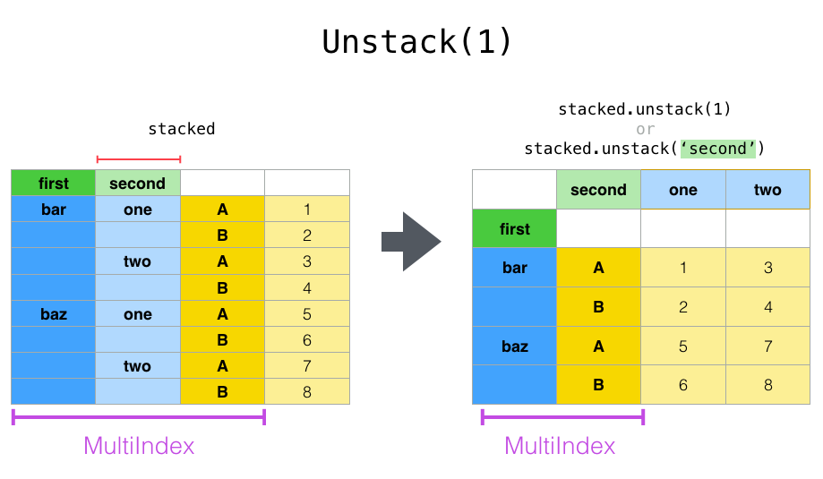

High Performance Data Analytics in Python
Scientists, engineers and professionals from many sectors are seeing an enormous growth in the size and number of datasets relevant to their domains. Professional titles have emerged to describe specialists working with data, such as data scientists and data engineers, but also other experts are finding it necessary to learn tools and techniques to work with big data. Typical tasks include preprocessing, analysing, modeling and visualising data.
Python is an industry-standard programming language for working with data on all levels of the data analytics pipeline. This is in large part because of the rich ecosystem of libraries ranging from generic numerical libraries to special-purpose and/or domain-specific packages, often supported by large developer communities and stable funding sources.
This lesson is meant to give an overview of working with research data in Python using general libraries for storing, processing, analysing and sharing data. The focus is on high performance. After covering tools for performant processing on single workstations the focus shifts to profiling and optimising, parallel and distributed computing.
Prerequisites
Basic experience with Python
Basic experience in working in a Linux-like terminal
Some prior experience in working with large or small datasets
15 min |
|
60 min |
|
90 min |
|
90 min |
|
90 min |
|
90 min |
|
90 min |
Installation and HPC access
This page contains instructions for installing the required dependencies on a local computer as well as instructions for logging into a EuroHPC system.
Local installation
If you already have a preferred way to manage Python versions and libraries, you can stick to that. If not, we recommend that you install Python3 and all libraries using Miniforge, a free minimal installer for the package, dependency and environment manager conda.
Please follow the installation instructions on https://conda-forge.org/download/ to install Miniforge.
Make sure that conda is correctly installed:
$ conda --version
conda 24.11.2
With conda installed, install the required dependencies by running:
$ conda env create --yes -f https://raw.githubusercontent.com/ENCCS/hpda-python/main/content/env/environment.yml
This will create a new environment pyhpda which you need to activate by:
$ conda activate pyhpda
Ensure that the Python version is fairly recent:
$ python --version
Python 3.12.8
Finally, open Jupyter-Lab in your browser:
$ jupyter-lab
LUMI
Note
Go to LUMI open OnDemand portal
Motivation
Objectives
Become familiar with the term “big data”
Know what to expect from this course
Instructor note
10 min teaching/type-along
Big data
How large is your data?
How large is the data you are working with? Are you experiencing performance bottlenecks when you try to analyse it?
“Big data refers to data sets that are too large or complex to be dealt with by traditional data-processing application software. […] Big data analysis challenges include capturing data, data storage, data analysis, search, sharing, transfer, visualization, querying, updating, information privacy, and data source.” (from Wikipedia)
“Big data” is a current buzzword used heavily in the tech industry, but many scientific research communities are increasingly adopting high-throughput data production methods which lead to very large datasets. One driving force behind this development is the advent of powerful machine learning methods which enable researchers to derive novel scientific insights from large datasets. Another is the strong development of high performance computing (HPC) hardware and the accompanying development of software libraries and packages which can efficiently take advantage of the hardware.
This course focuses on high-performace data analytics (HPDA), a subset of high-performance computing which focuses on working with large data. The data can come from either computer models and simulations or from experiments and observations, and the goal is to preprocess, analyse and visualise it to generate scientific results.
Python
Performance bottlenecks in Python
Have you ever written Python scripts that look something like this?
f = open("mydata.dat", "r")
for line in f.readlines():
fields = line.split(",")
x, y, z = fields[1], fields[2], fields[3]
# some analysis with x, y and z
f.close()
Compared to C/C++/Fortran, this for-loop will probably be orders of magnitude slower!
Despite early design choices of the Python language which made it significantly slower than conventional HPC languages, a rich and growing ecosystem of open source libraries have established Python as an industry-standard programming language for working with data on all levels of the data analytics pipeline. These range from generic numerical libraries to special-purpose and/or domain-specific packages. This lesson is focused on introducing modern packages from the Python ecosystem to work with large data. Specifically, we will learn to use:
Numpy
Scipy
Pandas
Xarray
Numba
Cython
multithreading
multiprocessing
Dask
What you will learn
This lesson provides a broad overview of methods to work with large datasets using tools and libraries from the Python ecosystem. Since this field is fairly extensive we will not have time to go into much depth. Instead, the objective is to expose just enough details on each topic for you to get a good idea of the big picture and an understanding of what combination of tools and libraries will work well for your particular use case.
Specifically, the lesson covers:
Tools for efficiently storing data and writing/reading data to/from disk
How to share datasets and mint digital object identifiers (DOI)
Main methods of efficiently working with tabular data and multidimensional arrays
How to measure performance and boost performance of time consuming Python functions
Various methods to parallelise Python code
The lesson does not cover the following:
Visualisation techniques
Machine learning
GPU related
Keypoints
Datasets are getting larger across nearly all scientific and engineering domains
The Python ecosystem has many libraries and packages for working with big data efficiently
Scientific data
Objectives
Get an overview of different formats for scientific data
Understand performance pitfalls when working with big data
Learn how to work with the NetCDF format through Xarray
Know the pros and cons of open science
Learn how to mint a DOI for your project or dataset
Instructor note
30 min teaching/type-along
20 min exercises
Types of scientific data
Bit and Byte
The smallest building block of storage in the computer is a bit, which stores either a 0 or 1. Normally a number of 8 bits are combined in a group to make a byte. One byte (8 bits) can represent/hold at most \(2^8\) distinct values. Organising bytes in different ways can represent different types of information, i.e. data.
Numerical Data
Different numerical data types (e.g. integer and floating-point numbers) can be represented by bytes. The more bytes we use for each value, the larger is the range or precision we get, but more bytes require more memory.
For example, integers stored with 1 byte (8 bits) have a range from [-128, 127], while with 2 bytes (16 bits) the range becomes [-32768, 32767]. Integers are whole numbers and can be represented exactly given enough bytes. However, for floating-point numbers the decimal fractions can not be represented exactly as binary (base 2) fractions in most cases which is known as the representation error. Arithmetic operations will further propagate this error. That is why in scientific computing, numerical algorithms have to be carefully designed to not accumulate errors, and floating-point numbers are usually allocated with 8 bytes to make sure the inaccuracy is under control and does not lead to unsteady solutions.
Single vs double precision
In many computational modeling domains, it is common practice to use single precision in some parts of the modeling to achieve better performance at an affordable cost to the accuracy. For example in climate simulations, molecular dynamics and machine learning.
Have you used single precision in your modeling? Did you observe higher performance?
Text Data
When it comes to text data, the simplest character encoding is ASCII (American Standard Code for Information Interchange) and was the most common character encodings until 2008 when UTF-8 took over. The original ASCII uses only 7 bits for representing each character and therefore encodes only 128 specified characters. Later it became common to use an 8-bit byte to store each character in memory, providing an extended ASCII.
As computers became more powerful and the need for including more characters from other languages like Chinese, Greek and Arabic became more pressing, UTF-8 became the most common encoding. UTF-8 uses a minimum of one byte and up to four bytes per character.
Data and storage format
In real scientific applications, data is complex and structured and usually contains both numerical and text data. Here we list a few of the data and file storage formats commonly used.
Tabular Data
A very common type of data is “tabular data”. Tabular data is structured into rows and columns. Each column usually has a name and a specific data type while each row is a distinct sample which provides data according to each column (including missing values). The simplest and most common way to save tabular data is via the so-called CSV (comma-separated values) file.
Gridded Data
Gridded data is another very common data type in which numerical data is normally saved in a multi-dimensional rectangular grid. Most probably it is saved in one of the following formats:
Hierarchical Data Format (HDF5) - Container for many arrays
Network Common Data Form (NetCDF) - Container for many arrays which conform to the NetCDF data model
Zarr - New cloud-optimized format for array storage
Metadata
Metadata consists of various information about the data. Different types of data may have different metadata conventions.
In Earth and Environmental science, there are widespread robust practices around metadata. For NetCDF files, metadata can be embedded directly into the data files. The most common metadata convention is Climate and Forecast (CF) Conventions, commonly used with NetCDF data.
When it comes to data storage, there are many types of storage formats used in scientific computing and data analysis. There isn’t one data storage format that works in all cases, so choose a file format that best suits your data.
CSV (comma-separated values)
Key features
Type: Text format
Packages needed: NumPy, Pandas
Space efficiency: Bad
Good for sharing/archival: Yes
- Tidy data:
Speed: Bad
Ease of use: Great
- Array data:
Speed: Bad
Ease of use: Ok for one or two dimensional data. Bad for anything higher.
Best use cases: Sharing data. Small data. Data that needs to be human-readable.
CSV is by far the most popular file format, as it is human-readable and easily shareable. However, it is not the best format to use when you’re working with big data.
Important
When working with floating point numbers, you should be careful to save the data with enough decimal places so that you won’t lose precision.
You may lose data precision simply because you do not save the data with enough decimals
CSV writing routines in Pandas and NumPy try to avoid such problems by writing floating point numbers with enough precision, but they are not perfect.
Storage of high-precision CSV files is usually very inefficient storage-wise.
Binary files, where floating point numbers are represented in their native binary format, do not suffer from these problems.
HDF5 (Hierarchical Data Format version 5)
Key features
Type: Binary format
Packages needed: Pandas, PyTables, h5py
Space efficiency: Good for numeric data.
Good for sharing/archival: Yes, if datasets are named well.
- Tidy data:
Speed: Ok
Ease of use: Good
- Array data:
Speed: Great
Ease of use: Good
Best use cases: Working with big datasets in array data format.
HDF5 is a high performance storage format for storing large amounts of data in multiple datasets in a single file. It is especially popular in fields where you need to store big multidimensional arrays such as physical sciences.
NetCDF4 (Network Common Data Form version 4)
Key features
Type: Binary format
Packages needed: Pandas, netCDF4/h5netcdf, xarray
Space efficiency: Good for numeric data.
Good for sharing/archival: Yes.
- Tidy data:
Speed: Ok
Ease of use: Good
- Array data:
Speed: Good
Ease of use: Great
Best use cases: Working with big datasets in array data format. Especially useful if the dataset contains spatial or temporal dimensions. Archiving or sharing those datasets.
NetCDF4 is a data format that uses HDF5 as its file format, but it has standardized structure of datasets and metadata related to these datasets. This makes it possible to be read from various different programs.
NetCDF4 is by far the most common format for storing large data from big simulations in physical sciences.
The advantage of NetCDF4 compared to HDF5 is that one can easily add additional metadata, e.g. spatial
dimensions (x, y, z) or timestamps (t) that tell where the grid-points are situated.
As the format is standardized, many programs can use this metadata for visualization and further analysis.
There’s more
Xarray
Xarray is a Python package that builds on NumPy but adds labels to multi-dimensional arrays. It also borrows heavily from the Pandas package for labelled tabular data and integrates tightly with dask for parallel computing. NumPy, Pandas and Dask will be covered in later episodes.
Xarray is particularly tailored to working with NetCDF files. It reads and writes to NetCDF files using the
open_dataset() / open_dataarray() functions and the to_netcdf() method. Explore these in the
exercise below!
Sharing data
The Open Science movement encourages researchers to share research output beyond the contents of a published academic article (and possibly supplementary information).

Pros and cons of sharing data (from Wikipedia)
In favor:
Open access publication of research reports and data allows for rigorous peer-review
Science is publicly funded so all results of the research should be publicly available
Open Science will make science more reproducible and transparent
Open Science has more impact
Open Science will help answer uniquely complex questions
Against:
Too much unsorted information overwhelms scientists
Potential misuse
The public will misunderstand science data
Increasing the scale of science will make verification of any discovery more difficult
Low-quality science
FAIR principles

(This image was created by Scriberia for The Turing Way community and is used under a CC-BY licence. The image was obtained from https://zenodo.org/record/3332808)
“FAIR” is the current buzzword for data management. You may be asked about it in, for example, making data management plans for grants:
Findable
Will anyone else know that your data exists?
Solutions: put it in a standard repository, or at least a description of the data. Get a digital object identifier (DOI).
Accessible
Once someone knows that the data exists, can they get it?
Usually solved by being in a repository, but for non-open data, may require more procedures.
Interoperable
Is your data in a format that can be used by others, like csv instead of PDF?
Or better than csv. Example: 5-star open data
Reusable
Is there a license allowing others to re-use?
Even though this is usually referred to as “open data”, it means considering and making good decisions, even if non-open.
FAIR principles are usually discussed in the context of data, but they apply also for research software.
Note that FAIR principles do not require data/software to be open.
Think about open science in your own situation
Do you share any other research outputs besides published articles and possibly source code?
Is there any particular reason which stops you from sharing research data?
Services for sharing and collaborating on research data
To find a research data repository for your data, you can search on the Registry of Research Data Repositories re3data platform and filter by country, content type, discipline, etc.
International:
Zenodo: A general-purpose open access repository created by OpenAIRE and CERN. Integration with GitHub, allows researchers to upload files up to 50 GB.
Figshare: Online digital repository where researchers can preserve and share their research outputs (figures, datasets, images and videos). Users can make all of their research outputs available in a citable, shareable and discoverable manner.
EUDAT: European platform for researchers and practitioners from any research discipline to preserve, find, access, and process data in a trusted environment.
Dryad: A general-purpose home for a wide diversity of datatypes, governed by a nonprofit membership organization. A curated resource that makes the data underlying scientific publications discoverable, freely reusable, and citable.
The Open Science Framework: Gives free accounts for collaboration around files and other research artifacts. Each account can have up to 5 GB of files without any problem, and it remains private until you make it public.
Sweden:
Exercises
Use Xarray to work with NetCDF files
This exercise is derived from Xarray Tutorials, which is distributed under an Apache-2.0 License.
First create an Xarray dataset:
import numpy as np
import xarray as xr
ds1 = xr.Dataset(
data_vars={
"a": (("x", "y"), np.random.randn(4, 2)),
"b": (("z", "x"), np.random.randn(6, 4)),
},
coords={
"x": np.arange(4),
"y": np.arange(-2, 0),
"z": np.arange(-3, 3),
},
)
ds2 = xr.Dataset(
data_vars={
"a": (("x", "y"), np.random.randn(7, 3)),
"b": (("z", "x"), np.random.randn(2, 7)),
},
coords={
"x": np.arange(6, 13),
"y": np.arange(3),
"z": np.arange(3, 5),
},
)
Then write the datasets to disk using to_netcdf() method:
ds1.to_netcdf("ds1.nc")
ds2.to_netcdf("ds2.nc")
You can read an individual file from disk by using open_dataset() method:
ds3 = xr.open_dataset("ds1.nc")
or using the load_dataset() method:
ds4 = xr.load_dataset('ds1.nc')
Tasks:
Explore the hierarchical structure of the
ds1andds2datasets in a Jupyter notebook by typing the variable names in a code cell and execute. Click the disk-looking objects on the right to expand the fields.Explore
ds3andds4datasets, and compare them withds1. What are the differences?
Get a DOI by connecting your repository to Zenodo
Digital object identifiers (DOI) are the backbone of the academic reference and metrics system. In this exercise you will see how to make a GitHub repository citable by archiving it on the Zenodo archiving service. Zenodo is a general-purpose open access repository created by OpenAIRE and CERN.
For this exercise you need to have a GitHub account and at least one public repository that you can use for testing. If you need a new repository, you can fork for example this one (click the “fork” button in the top right corner and fork it to your username).
Sign in to Zenodo using your GitHub account. For this exercise, use the sandbox service: https://sandbox.zenodo.org/login/. This is a test version of the real Zenodo platform.
Go to https://sandbox.zenodo.org/account/settings/github/ and log in with your GitHub account.
Find the repository you wish to publish, and flip the switch to ON.
Go to GitHub and create a release by clicking the Create a new release on the right-hand side (a release is based on a Git tag, but is a higher-level GitHub feature).
Creating a new release will trigger Zenodo into archiving your repository, and a DOI badge will be displayed next to your repository after a minute or two.
You can include the DOI badge in your repository’s README file by clicking the DOI badge and copy the relevant format (Markdown, RST, HTML).
See also
Keypoints
File formats matter. For large datasets, use HDF5, NetCDF or similar.
The Xarray package provides high-level methods to work with data in NetCDF format.
Consider sharing other research outputs than articles. It is easy to mint DOIs and get cited!
Efficient array computing
Objectives
Understand limitations of Python’s standard library for large data processing
Understand the logic behind NumPy ndarrays and learn to use some NumPy numerical computing tools
Learn to use data structures and analysis tools from Pandas
Instructor note
30 min teaching/type-along
20 min exercises
This episode is partly based on material from this repository on HPC-Python from CSC and this Python for Scientific Computing lesson, distributed under MIT and CC-BY-4.0 licenses, respectively.
Why can Python be slow?
Computer programs are nowadays practically always written in a high-level human readable programming language and then translated to the actual machine instructions that a processor understands. There are two main approaches for this translation:
For compiled programming languages, the translation is done by a compiler before the execution of the program
For interpreted languages, the translation is done by an interpreter during the execution of the program
Compiled languages are typically more efficient, but the behaviour of the program during runtime is more static than with interpreted languages. The compilation step can also be time consuming, so the software cannot always be tested as rapidly during development as with interpreted languages.
Python is an interpreted language, and many features that make development rapid with Python are a result of that, with the price of reduced performance in many cases.
Dynamic typing
Python is a dynamic language. Variables get a type only during the runtime when values (Python objects) are assigned to them, so it is more difficult for the interpreter to optimize the execution. In comparison, a compiler can make extensive analysis and optimization before the execution. Even though there has in recent years been a lot of progress in just-in-time (JIT) compilation techniques that allow programs to be optimized at runtime, the inherent, dynamic nature of the Python programming language remains one of its main performance bottlenecks.
Flexible data structures
The built-in data structures of Python, such as lists and dictionaries, are very flexible, but they are also very generic which makes them not well suited for extensive numerical computations. Even though the implementation of data structures is often quite efficient when processing different types of data, there is a lot of overhead due to the generic nature of these data structures when processing only a single type of data.
In summary, the flexibility and dynamic nature of Python, which enhances programmer productivity greatly, is also the main cause for the performance problems. Fortunately, as we discuss in the course, many of the bottlenecks can be circumvented.
NumPy
As probably the most fundamental building block of the scientific computing ecosystem in Python, NumPy offers comprehensive mathematical functions, random number generators, linear algebra routines, Fourier transforms, and more.
NumPy is based on well-optimized C code, which gives much better performace than regular Python.
In particular, by using homogeneous
data structures, NumPy vectorizes mathematical operations where fast pre-compiled code
can be applied to a sequence of data instead of using traditional for loops.
Arrays
The core of NumPy is the NumPy ndarray (n-dimensional array). Compared to a Python list,
an ndarray is similar in terms of serving as a data container.
Some differences between the two are:
ndarrays can have multiple dimensions, e.g. a 1-D array is a vector, a 2-D array is a matrix
ndarrays are fast only when all data elements are of the same type
ndarray operations are fast when vectorized
ndarrays are slower for certain operations, e.g. appending elements

Data types
NumPy supports a much greater variety of numerical types (dtype) than Python does.
There are 5 basic numerical types representing booleans (bool), integers (int),
unsigned integers (uint) floating point (float) and complex (complex).
import numpy as np
# create float32 variable
x = np.float32(1.0)
# array with uint8 unsigned integers
z = np.arange(3, dtype=np.uint8)
# convert array to floats
z.astype(float)
Creating NumPy arrays
One way to create a NumPy array is to convert from a Python list, but make sure that the list is homogeneous
(contains same data type) otherwise performace will be downgraded.
Since appending elements to an existing array is slow, it is a common practice to preallocate the necessary space
with np.zeros or np.empty when converting from a Python list is not possible.
import numpy as np
a = np.array((1, 2, 3, 4), float)
a
# array([ 1., 2., 3., 4.])
list1 = [[1, 2, 3], [4, 5, 6]]
mat = np.array(list1, complex)
# create complex array, with imaginary part equal to zero
mat
# array([[ 1.+0.j, 2.+0.j, 3.+0.j],
# [ 4.+0.j, 5.+0.j, 6.+0.j]])
mat.shape
# (2, 3)
mat.size
# 6
arange and linspace can generate ranges of numbers:
a = np.arange(10)
a
# array([0, 1, 2, 3, 4, 5, 6, 7, 8, 9])
b = np.arange(0.1, 0.2, 0.02)
b
# array([0.1 , 0.12, 0.14, 0.16, 0.18])
c = np.linspace(-4.5, 4.5, 5)
c
# array([-4.5 , -2.25, 0. , 2.25, 4.5 ])
Array with given shape initialized to zeros, ones, arbitrary value (full)
or unitialized (empty):
a = np.zeros((4, 6), float)
a.shape
# (4, 6)
b = np.ones((2, 4))
b
# array([[ 1., 1., 1., 1.],
# [ 1., 1., 1., 1.]])
c = np.full((2, 3), 4.2)
c
# array([[4.2, 4.2, 4.2],
# [4.2, 4.2, 4.2]])
d = np.empty((2, 2))
# array([[0.00000000e+000, 1.03103236e-259],
# [0.00000000e+000, 9.88131292e-324]])
Similar arrays as an existing array:
a = np.zeros((4, 6), float)
b = np.empty_like(a)
c = np.ones_like(a)
d = np.full_like(a, 9.1)
Array Operations and Manipulations
All the familiar arithmetic operators in NumPy are applied elementwise:
import numpy as np
a = np.array([1, 2, 3])
b = np.array([4, 5, 6])
a + b

a/b

import numpy as np
a = np.array([[1, 2, 3], [4, 5, 6]])
b = np.array([10, 10, 10], [10, 10, 10]])
a + b # array([[11, 12, 13],
# [14, 15, 16]])

Array Indexing
Basic indexing is similar to Python lists. Note that advanced indexing creates copies of arrays.
import numpy as np
data = np.array([1,2,3,4,5,6,7,8])
Integer indexing:

Fancy indexing:

Boolean indexing:

import numpy as np
data = np.array([[1, 2, 3, 4],[5, 6, 7, 8],[9, 10, 11, 12]])

Integer indexing:

Fancy indexing:

Boolean indexing:
Array Aggregation
Apart from aggregating values, one can also aggregate across rows or columns by using the axis parameter:
import numpy as np
data = np.array([[0, 1, 2], [3, 4, 5]])


Array Reshaping
Sometimes, you need to change the dimension of an array. One of the most common need is to transposing the matrix during the dot product. Switching the dimensions of a NumPy array is also quite common in more advanced cases.
import numpy as np
data = np.array([1,2,3,4,5,6,7,8,9,10,11,12])

data.reshape(4,3)

data.reshape(3,4)

Views and copies of arrays
Simple assignment creates references to arrays
Slicing creates views to the arrays
Use
copyfor real copying of arrays
a = np.arange(10)
b = a # reference, changing values in b changes a
b = a.copy() # true copy
c = a[1:4] # view, changing c changes elements [1:4] of a
c = a[1:4].copy() # true copy of subarray
I/O with NumPy
Numpy provides functions for reading data from file and for writing data into the files
Simple text files
numpy.loadtxt()numpy.savetxt()Data in regular column layout
Can deal with comments and different column delimiters
Random numbers
The module
numpy.randomprovides several functions for constructing random arraysrandom(): uniform random numbersnormal(): normal distributionchoice(): random sample from given array…
import numpy.random as rnd
rnd.random((2,2))
# array([[ 0.02909142, 0.90848 ],
# [ 0.9471314 , 0.31424393]])
rnd.choice(numpy.arange(4), 10)
# array([0, 1, 1, 2, 1, 1, 2, 0, 2, 3])
Polynomials
Polynomial is defined by an array of coefficients p
p(x, N) = p[0] x^{N-1} + p[1] x^{N-2} + ... + p[N-1]For example:
Least square fitting:
numpy.polyfit()Evaluating polynomials:
numpy.polyval()Roots of polynomial:
numpy.roots()
x = np.linspace(-4, 4, 7)
y = x**2 + rnd.random(x.shape)
p = np.polyfit(x, y, 2)
p
# array([ 0.96869003, -0.01157275, 0.69352514])
Linear algebra
NumPy can calculate matrix and vector products efficiently:
dot(),vdot(), …Eigenproblems:
linalg.eig(),linalg.eigvals(), …Linear systems and matrix inversion:
linalg.solve(),linalg.inv()
A = np.array(((2, 1), (1, 3)))
B = np.array(((-2, 4.2), (4.2, 6)))
C = np.dot(A, B)
b = np.array((1, 2))
np.linalg.solve(C, b) # solve C x = b
# array([ 0.04453441, 0.06882591])
Normally, NumPy utilises high performance libraries in linear algebra operations
Example: matrix multiplication C = A * B matrix dimension 1000
pure python: 522.30 s
naive C: 1.50 s
numpy.dot: 0.04 s
library call from C: 0.04 s
Pandas
Pandas is a Python package that provides high-performance and easy to use data structures and data analysis tools. Built on NumPy arrays, Pandas is particularly well suited to analyze tabular and time series data. Although NumPy could in principle deal with structured arrays (arrays with mixed data types), it is not efficient.
The core data structures of Pandas are Series and Dataframes.
A Pandas series is a one-dimensional NumPy array with an index which we could use to access the data
A dataframe consist of a table of values with labels for each row and column. A dataframe can combine multiple data types, such as numbers and text, but the data in each column is of the same type.
Each column of a dataframe is a series object - a dataframe is thus a collection of series.

Tidy vs untidy data
Let’s first look at the following two dataframes:
runners = pd.DataFrame([
{'Runner': 'Runner 1', 400: 64, 800: 128, 1200: 192, 1500: 240},
{'Runner': 'Runner 2', 400: 80, 800: 160, 1200: 240, 1500: 300},
{'Runner': 'Runner 3', 400: 96, 800: 192, 1200: 288, 1500: 360},
])
runners
# returns:
# Runner 400 800 1200 1500
# 0 Runner 1 64 128 192 240
# 1 Runner 2 80 160 240 300
# 2 Runner 3 96 192 288 360
# "melt" the data (opposite of "pivot")
runners = pd.melt(runners, id_vars="Runner",
value_vars=[400, 800, 1200, 1500],
var_name="distance",
value_name="time"
)
# returns:
# Runner distance time
# 0 Runner 1 400 64
# 1 Runner 2 400 80
# 2 Runner 3 400 96
# 3 Runner 1 800 128
# 4 Runner 2 800 160
# 5 Runner 3 800 192
# 6 Runner 1 1200 192
# 7 Runner 2 1200 240
# 8 Runner 3 1200 288
# 9 Runner 1 1500 240
# 10 Runner 2 1500 300
# 11 Runner 3 1500 360
Most tabular data is either in a tidy format or a untidy format (some people refer them as the long format or the wide format).
In untidy (wide) format, each row represents an observation consisting of multiple variables and each variable has its own column. This is intuitive and easy for us to understand and make comparisons across different variables, calculate statistics, etc.
In tidy (long) format , i.e. column-oriented format, each row represents only one variable of the observation, and can be considered “computer readable”.
When it comes to data analysis using Pandas, the tidy format is recommended:
Each column can be stored as a vector and this not only saves memory but also allows for vectorized calculations which are much faster.
It’s easier to filter, group, join and aggregate the data.
The name “tidy data” comes from Wickham’s paper (2014) which describes the ideas in great detail.
Data analysis workflow
Pandas is a powerful tool for many steps of a data analysis pipeline:
Downloading and reading in datasets
Initial exploration of data
Pre-processing and cleaning data
renaming, reshaping, reordering, type conversion, handling duplicate/missing/invalid data
Analysis
To explore some of the capabilities, we start with an example dataset containing the passenger list from the Titanic, which is often used in Kaggle competitions and data science tutorials. First step is to load Pandas and download the dataset into a dataframe:
import pandas as pd
url = "https://raw.githubusercontent.com/pandas-dev/pandas/master/doc/data/titanic.csv"
# set the index to the "Name" column
titanic = pd.read_csv(url, index_col="Name")
Pandas also understands multiple other formats, for example read_excel(),
read_hdf(), read_json(), etc. (and corresponding methods to write to file:
to_csv(), to_excel(), to_hdf(), to_json(), …)
We can now view the dataframe to get an idea of what it contains and print some summary statistics of its numerical data:
# print the first 5 lines of the dataframe
titanic.head()
# print some information about the columns
titanic.info()
# print summary statistics for each column
titanic.describe()
Ok, so we have information on passenger names, survival (0 or 1), age, ticket fare, number of siblings/spouses, etc. With the summary statistics we see that the average age is 29.7 years, maximum ticket price is 512 USD, 38% of passengers survived, etc.
Unlike a NumPy array, a dataframe can combine multiple data types, such as
numbers and text, but the data in each column is of the same type. So we say a
column is of type int64 or of type object.
Indexing
Let’s inspect one column of the dataframe:
titanic["Age"]
titanic.Age # same as above
The columns have names. Here’s how to get them:
titanic.columns
However, the rows also have names! This is what Pandas calls the index:
titanic.index
We saw above how to select a single column, but there are many ways of selecting (and setting) single or multiple rows, columns and elements. We can refer to columns and rows either by number or by their name:
titanic.loc["Lam, Mr. Ali","Age"] # select single value by row and column
titanic.loc["Lam, Mr. Ali","Survived":"Age"] # slice the dataframe by row and column *names*
titanic.iloc[692,3:6] # same slice as above by row and column *numbers*
titanic.at["Lam, Mr. Ali","Age"] # select single value by row and column *name* (fast)
titanic.at["Lam, Mr. Ali","Age"] = 42 # set single value by row and column *name* (fast)
titanic.iat[692,4] # select same value by row and column *number* (fast)
titanic["somecolumns"] = "somevalue" # set a whole column
Dataframes also support boolean indexing:
titanic[titanic["Age"] > 70]
# ".str" creates a string object from a column
titanic[titanic.index.str.contains("Margaret")]
Missing/invalid data
What if your dataset has missing data? Pandas uses the value np.nan
to represent missing data, and by default does not include it in any computations.
We can find missing values, drop them from our dataframe, replace them
with any value we like or do forward or backward filling:
titanic.isna() # returns boolean mask of NaN values
titanic.dropna() # drop missing values
titanic.dropna(how="any") # or how="all"
titanic.dropna(subset=["Cabin"]) # only drop NaNs from one column
titanic.fillna(0) # replace NaNs with zero
titanic.fillna(method='ffill') # forward-fill NaNs
titanic.fillna(method='bfill') # backward-fill NaNs
Groupby
groupby() is a powerful method which splits a dataframe and aggregates data
in groups. To see what’s possible, let’s
test the old saying “Women and children first”. We start by creating a new
column Child to indicate whether a passenger was a child or not, based on
the existing Age column. For this example, let’s assume that you are a
child when you are younger than 12 years:
titanic["Child"] = titanic["Age"] < 12
Now we can test the saying by grouping the data on Sex and then creating
further sub-groups based on Child:
titanic.groupby(["Sex", "Child"])["Survived"].mean()
Here we chose to summarize the data by its mean, but many other common
statistical functions are available as dataframe methods, like
std(), min(), max(), cumsum(), median(), skew(),
var() etc.
The workflow of groupby() can be divided into three general steps:
Splitting: Partition the data into different groups based on some criterion.
Applying: Do some caclulation within each group. Different kinds of calulations might be aggregation, transformation, filtration.
Combining: Put the results back together into a single object.

(Image source from lecture Earth and Environmental Data Science https://earth-env-data-science.github.io/intro.html)
For an overview of other data wrangling methods built into Pandas, have a look at Optional: more on Pandas.
Scipy
SciPy is a library that builds on top of NumPy. It contains a lot of interfaces to battle-tested numerical routines written in Fortran or C, as well as Python implementations of many common algorithms.
What’s in SciPy?
Briefly, it contains functionality for
Special functions (Bessel, Gamma, etc.)
Numerical integration
Optimization
Interpolation
Fast Fourier Transform (FFT)
Signal processing
Linear algebra (more complete than in NumPy)
Sparse matrices
Statistics
More I/O routine, e.g. Matrix Market format for sparse matrices, MATLAB files (.mat), etc.
Many of these are not written specifically for SciPy, but use the best available open source C or Fortran libraries. Thus, you get the best of Python and the best of compiled languages.
Most functions are documented very well from a scientific standpoint: you aren’t just using some unknown function, but have a full scientific description and citation to the method and implementation.
Let us look more closely into one out of the countless useful functions available
in SciPy. curve_fit() is a non-linear least squares fitting function. NumPy
has least-squares fitting via the np.linalg.lstsq() function, but we need to
go to SciPy to find non-linear curve fitting.
This example fits a power-law to a vector:
import numpy as np
from scipy.optimize import curve_fit
def powerlaw(x, A, s):
return A * np.power(x, s)
# data
Y = np.array([9115, 8368, 7711, 5480, 3492, 3376, 2884, 2792, 2703, 2701])
X = np.arange(Y.shape[0]) + 1.0
# initial guess for variables
p0 = [100, -1]
# fit data
params, cov = curve_fit(f=powerlaw, xdata=X, ydata=Y, p0=p0, bounds=(-np.inf, np.inf))
print("A =", params[0], "+/-", cov[0,0]**0.5)
print("s =", params[1], "+/-", cov[1,1]**0.5)
# optionally plot
import matplotlib.pyplot as plt
plt.plot(X,Y)
plt.plot(X, powerlaw(X, params[0], params[1]))
plt.show()
In an exercise below, you will learn to perform an operation like curve fitting on all rows of a pandas dataframe in an effective manner.
Exercises
Working effectively with dataframes
Recall the curve_fit() method from SciPy discussed above, and imagine that we
want to fit powerlaws to every row in a large dataframe. How can this be done effectively?
First define the powerlaw() function and another function for fitting a row of numbers:
import numpy as np
import pandas as pd
from scipy.optimize import curve_fit
def powerlaw(x, A, s):
return A * np.power(x, s)
def fit_powerlaw(row):
X = np.arange(row.shape[0]) + 1.0
params, cov = curve_fit(f=powerlaw, xdata=X, ydata=row, p0=[100, -1], bounds=(-np.inf, np.inf))
return params[1]
Next load a dataset with multiple rows similar to the one used in the example above:
df = pd.read_csv("https://raw.githubusercontent.com/ENCCS/hpda-python/main/content/data/results.csv")
# print first few rows
df.head()
Now consider these four different ways of fitting a powerlaw to each row of the dataframe:
powers = []
for row_indx in range(df.shape[0]):
row = df.iloc[row_indx,1:]
p = fit_powerlaw(row)
powers.append(p)
powers = []
for row_indx,row in df.iterrows():
p = fit_powerlaw(row[1:])
powers.append(p)
powers = df.iloc[:,1:].apply(fit_powerlaw, axis=1)
# raw=True passes numpy ndarrays instead of series to fit_powerlaw
powers = df.iloc[:,1:].apply(fit_powerlaw, axis=1, raw=True)
Which one do you think is most efficient? You can measure the execution time
by adding %%timeit to the first line of a Jupyter code cell. More on timing
and profiling in a later episode.
Solution
The execution time drops as you go from the version in the left tab to the right tab:
%%timeit
powers = []
for row_indx in range(df.shape[0]):
row = df.iloc[row_indx,1:]
p = fit_powerlaw(row)
powers.append(p)
# 33.6 ms ± 682 µs per loop (mean ± std. dev. of 7 runs, 10 loops each)
%%timeit
powers = []
for row_indx,row in df.iterrows():
p = fit_powerlaw(row[1:])
powers.append(p)
# 28.7 ms ± 947 µs per loop (mean ± std. dev. of 7 runs, 10 loops each)
%%timeit
powers = df.iloc[:,1:].apply(fit_powerlaw, axis=1)
# 26.1 ms ± 1.19 ms per loop (mean ± std. dev. of 7 runs, 10 loops each)
%%timeit
powers = df.iloc[:,1:].apply(fit_powerlaw, axis=1, raw=True)
# 24 ms ± 1.27 ms per loop (mean ± std. dev. of 7 runs, 10 loops each)
Further analysis of the Titanic passenger list dataset
Consider the titanic dataset. If you haven’t done so already, load it into a dataframe:
import pandas as pd
url = "https://raw.githubusercontent.com/pandas-dev/pandas/master/doc/data/titanic.csv"
titanic = pd.read_csv(url, index_col="Name")
Compute the mean age of the first 10 passengers by slicing and the
meanmethodUsing boolean indexing, compute the survival rate (mean of “Survived” values) among passengers over and under the average age.
Now investigate the family size of the passengers (i.e. the “SibSp” column):
What different family sizes exist in the passenger list? Hint: try the
unique()methodWhat are the names of the people in the largest family group?
(Advanced) Create histograms showing the distribution of family sizes for passengers split by the fare, i.e. one group of high-fare passengers (where the fare is above average) and one for low-fare passengers (Hint: instead of an existing column name, you can give a lambda function as a parameter to
histto compute a value on the fly. For examplelambda x: "Poor" if titanic["Fare"].loc[x] < titanic["Fare"].mean() else "Rich").
Solution
Mean age of the first 10 passengers:
titanic.iloc[:10,:]["Age"].mean()ortitanic.iloc[:10,4].mean()ortitanic.loc[:"Nasser, Mrs. Nicholas (Adele Achem)", "Age"].mean().Survival rate among passengers over and under average age:
titanic[titanic["Age"] > titanic["Age"].mean()]["Survived"].mean()andtitanic[titanic["Age"] < titanic["Age"].mean()]["Survived"].mean().Existing family sizes:
titanic["SibSp"].unique()Names of members of largest family(ies):
titanic[titanic["SibSp"] == 8].indextitanic.hist("SibSp", lambda x: "Poor" if titanic["Fare"].loc[x] < titanic["Fare"].mean() else "Rich", rwidth=0.9)
See also
NumPy documentation
Pandas getting started guide
Pandas documentation containing a user guide, API reference and contribution guide.
Pandas cheatsheet
Pandas cookbook.
Scipy documentation
Keypoints
NumPy provides a static array data structure, fast mathematical operations for arrays and tools for linear algebra and random numbers
Pandas dataframes are a good data structure for tabular data
Dataframes allow both simple and advanced analysis in very compact form
SciPy contains a lot of interfaces to battle-tested numerical routines
Parallel computing
Questions
What is the Global Interpreter Lock in Python?
How can Python code be parallelised?
Objectives
Become familiar with different types of parallelism
Learn the basics of parallel workflows, multiprocessing and distributed memory parallelism
Instructor note
40 min teaching/type-along
40 min exercises
The performance of a single CPU core has stagnated over the last ten years and most of the speed-up in modern CPUs is coming from using multiple CPU cores, i.e. parallel processing. Parallel processing is normally based either on multiple threads or multiple processes.
There are three main models of parallel computing:
“Embarrassingly” parallel: the code does not need to synchronize/communicate with other instances, and you can run multiple instances of the code separately, and combine the results later. If you can do this, great!
Shared memory parallelism (multithreading):
Parallel threads do separate work and communicate via the same memory and write to shared variables.
Multiple threads in a single Python program cannot execute at the same time (see GIL below)
Running multiple threads in Python is only effective for certain I/O-bound tasks
External libraries in other languages (e.g. C) which are called from Python can still use multithreading
Distributed memory parallelism (multiprocessing): Different processes manage their own memory segments and share data by communicating (passing messages) as needed.
A process can contain one or more threads
Two processes can run on different CPU cores and different computers
Processes have more overhead than threads (creating and destroying processes takes more time)
Running multiple processes is only effective for CPU-bound tasks
In the next episode we will look at Dask, an array model extension and task scheduler, which combines multiprocessing with (embarrassingly) parallel workflows and “lazy” execution.
In the Python world, it is common to see the word concurrency denoting any type of simultaneous processing, including threads, tasks and processes.
Warning
Parallel programming requires that we adopt a different mental model compared to serial programming. Many things can go wrong and one can get unexpected results or difficult-to-debug problems. It is important to understand the possible pitfalls before embarking on code parallelisation. For an entertaining take on this, see Raymond Hettinger’s PyCon2016 presentation.
The Global Interpreter Lock
The designers of the Python language made the choice that only one thread in a process can run actual Python code by using the so-called global interpreter lock (GIL). This means that approaches that may work in other languages (C, C++, Fortran), may not work in Python without being a bit careful. The reason GIL is needed is because part of the Python implementation related to the memory management is not thread-safe. At first glance, this is bad for parallelism. But one can avoid GIL through the folowing:
External libraries (NumPy, SciPy, Pandas, etc), written in C or other languages, can release the lock and run multi-threaded.
Most input/output tasks release the GIL.
There are several Python libraries that side-step the GIL, e.g. by using multiprocessing instead of threading.
Multithreading
Due to the GIL only one thread can execute Python code at once, and this makes threading rather useless for compute-bound problems in pure Python. However, multithreading is still relevant in two situations:
External libraries written in non-Python languages can take advantage of multithreading
Multithreading can be useful for running multiple I/O-bound tasks simultaneously.
Multithreaded libraries
NumPy and SciPy are built on external libraries such as LAPACK, FFTW append BLAS, which provide optimized routines for linear algebra, Fourier transforms etc. These libraries are written in C, C++ or Fortran and are thus not limited by the GIL, so they typically support actual multihreading during the execution. It might be a good idea to use multiple threads during calculations like matrix operations or frequency analysis.
Depending on configuration, NumPy will often use multiple threads by default,
but we can use the environment variable OMP_NUM_THREADS to set the number
of threads manually:
$ export OMP_NUM_THREADS=<N>
After setting this environment variable we continue as usual and multithreading will be turned on.
Demo: Multithreading NumPy
Here is an example which does a symmetrical matrix inversion of size 4000 by 4000.
To run it, we can save it in a file named omp_test.py or download from here.
import numpy as np
import time
A = np.random.random((4000,4000))
A = A * A.T
time_start = time.time()
np.linalg.inv(A)
time_end = time.time()
print("time spent for inverting A is", round(time_end - time_start,2), 's')
Let us test it with 1 and 4 threads:
$ export OMP_NUM_THREADS=1
$ python omp_test.py
$ export OMP_NUM_THREADS=4
$ python omp_test.py
Multithreaded I/O
This is how an I/O-bound application might look:
{kind=link}
From https://realpython.com/, distributed via a Creative Commons Attribution-NonCommercial-ShareAlike 3.0 Unported licence
The threading library
provides an API for creating and working with threads. The simplest approach to
create and manage threads is to use the ThreadPoolExecutor class.
An example use case could be to download data from multiple websites using
multiple threads:
import concurrent.futures
def download_all_sites(sites):
with concurrent.futures.ThreadPoolExecutor(max_workers=4) as executor:
executor.map(my_download_function, sites)
The speedup gained from multithreading I/O bound problems can be understood from the following image.
{kind=link}
From https://realpython.com/, distributed via a Creative Commons Attribution-NonCommercial-ShareAlike 3.0 Unported licence
Further details on threading in Python can be found in the See also section below.
Multiprocessing
The multiprocessing module in Python supports spawning processes using an API
similar to the threading module. It effectively side-steps the GIL by using
subprocesses instead of threads, where each subprocess is an independent Python
process.
One of the simplest ways to use multiprocessing is via Pool objects and
the parallel Pool.map() function, similarly to what we saw for multithreading above.
In the following code, we define a square()
function, call the cpu_count() method to get the number of CPUs on the machine,
and then initialize a Pool object in a context manager and inside of it call the
Pool.map() method to parallelize the computation.
We can save the code in a file named mp_map.py or download from here.
import multiprocessing as mp
def square(x):
return x * x
if __name__ == '__main__':
nprocs = mp.cpu_count()
print(f"Number of CPU cores: {nprocs}")
# use context manager to allocate and release the resources automatically
with mp.Pool(processes=nprocs) as pool:
result = pool.map(square, range(20))
print(result)
For functions that take multiple arguments one can instead use the Pool.starmap()
function (save as mp_starmap.py or download here)
import multiprocessing as mp
def power_n(x, n):
return x ** n
if __name__ == '__main__':
nprocs = mp.cpu_count()
print(f"Number of CPU cores: {nprocs}")
with mp.Pool(processes=nprocs) as pool:
result = pool.starmap(power_n, [(x, 2) for x in range(20)])
print(result)
Interactive environments
Functionality within multiprocessing requires that the __main__ module be
importable by children processes. This means that for example multiprocessing.Pool
will not work in the interactive interpreter. A fork of multiprocessing, called
multiprocess, can be used in interactive environments like Jupyter.
multiprocessing has a number of other methods which can be useful for certain
use cases, including Process and Queue which make it possible to have direct
control over individual processes. Refer to the See also section below for a list
of external resources that cover these methods.
At the end of this episode you can turn your attention back to the word-count problem
and practice using multiprocessing pools of processes.
MPI
The message passing interface (MPI) is a standard workhorse of parallel computing. Nearly
all major scientific HPC applications use MPI. Like multiprocessing, MPI belongs to the
distributed-memory paradigm.
The idea behind MPI is that:
Tasks have a rank and are numbered 0, 1, 2, 3, …
Each task manages its own memory
Each task can run multiple threads
Tasks communicate and share data by sending messages.
Many higher-level functions exist to distribute information to other tasks and gather information from other tasks.
All tasks typically run the entire code and we have to be careful to avoid that all tasks do the same thing.
mpi4py provides Python bindings for the Message Passing Interface (MPI) standard.
This is how a hello world MPI program looks like in Python:
from mpi4py import MPI
comm = MPI.COMM_WORLD
rank = comm.Get_rank()
size = comm.Get_size()
print('Hello from process {} out of {}'.format(rank, size))
MPI.COMM_WORLDis the communicator - a group of processes that can talk to each otherGet_rankreturns the individual rank (0, 1, 2, …) for each task that calls itGet_sizereturns the total number of ranks.
To run this code with a specific number of processes we use the mpirun command which
comes with the MPI library:
$ mpirun -np 4 python hello.py
# Hello from process 1 out of 4
# Hello from process 0 out of 4
# Hello from process 2 out of 4
# Hello from process 3 out of 4
Point-to-point and collective communication
The MPI standard contains a lot of functionality,
but in principle one can get away with only point-to-point communication (MPI.COMM_WORLD.send and
MPI.COMM_WORLD.recv). However, collective communication can sometimes require less effort as you
will learn in an exercise below.
In any case, it is good to have a mental model of different communication patterns in MPI.

send and recv: blocking point-to-point communication between two ranks.

gather: all ranks send data to rank root.

scatter: data on rank 0 is split into chunks and sent to other ranks

bcast: broadcast message to all ranks

reduce: ranks send data which are reduced on rank root
Examples
from mpi4py import MPI
comm = MPI.COMM_WORLD
rank = comm.Get_rank()
n_ranks = comm.Get_size()
if rank != 0:
# All ranks other than 0 should send a message
message = "Hello World, I'm rank {:d}".format(rank)
comm.send(message, dest=0, tag=0)
else:
# Rank 0 will receive each message and print them
for sender in range(1, n_ranks):
message = comm.recv(source=sender, tag=0)
print(message)
from mpi4py import MPI
comm = MPI.COMM_WORLD
rank = comm.Get_rank()
n_ranks = comm.Get_size()
if rank != 0:
# All ranks other than 0 should send a message
message = "Hello World, I'm rank {:d}".format(rank)
req = comm.isend(message, dest=0, tag=0)
req.wait()
else:
# Rank 0 will receive each message and print them
for sender in range(1, n_ranks):
req = comm.irecv(source=sender, tag=0)
message = req.wait()
print(message)
from mpi4py import MPI
comm = MPI.COMM_WORLD
rank = comm.Get_rank()
n_ranks = comm.Get_size()
# Rank 0 will broadcast message to all other ranks
if rank == 0:
send_message = "Hello World from rank 0"
else:
send_message = None
receive_message = comm.bcast(send_message, root=0)
if rank != 0:
print(f"rank {rank} received message: {receive_message}")
from mpi4py import MPI
comm = MPI.COMM_WORLD
rank = comm.Get_rank()
n_ranks = comm.Get_size()
# Use gather to send all messages to rank 0
send_message = "Hello World, I'm rank {:d}".format(rank)
receive_message = comm.gather(send_message, root=0)
if rank == 0:
for i in range(n_ranks):
print(receive_message[i])
from mpi4py import MPI
comm = MPI.COMM_WORLD
size = comm.Get_size()
rank = comm.Get_rank()
if rank == 0:
sendbuf = []
for i in range(size):
sendbuf.append(f"Hello World from rank 0 to rank {i}")
else:
sendbuf = None
recvbuf = comm.scatter(sendbuf, root=0)
print(f"rank {rank} received message: {recvbuf}")
MPI excels for problems which can be divided up into some sort of subdomains and communication is required between the subdomains between e.g. timesteps or iterations. The word-count problem is simpler than that and MPI is somewhat overkill, but in an exercise below you will learn to use point-to-point communication to parallelize it.
In addition to the lower-case methods send(), recv(), broadcast() etc., there
are also upper-case methods Send(), Recv(), Broadcast(). These work with
buffer-like objects (including strings and NumPy arrays) which have known memory location and size.
Upper-case methods are faster and are strongly recommended for large numeric data.
Exercises
Compute numerical integrals
The primary objective of this exercise is to compute integrals \(\int_0^1 x^{3/2} \, dx\) numerically.
One approach to integration is by establishing a grid along the x-axis. Specifically, the integration range is divided into ‘n’ segments or bins. Below is a basic serial code.
import math import time # Grid size n = 100000000 def integration_serial(n): h = 1.0 / float(n) mysum = 0.0 for i in range(n): x = h * (i + 0.5) mysum += x ** (3/2) return h * mysum if __name__ == "__main__": starttime = time.time() integral = integration_serial(n) endtime = time.time() print("Integral value is %e, Error is %e" % (integral, abs(integral - 2/5))) # The correct integral value is 2/5 print("Time spent: %.2f sec" % (endtime-starttime)) # 13.63 secThink about how to parallelize the code using multithreading and multiprocessing.
Full source code
import math import concurrent.futures import time # Grid size n = 100000000 # Number of threads numthreads = 4 def integration_concurrent(threadindex, n=n, numthreads=numthreads): h = 1.0 / float(n) mysum = 0.0 workload = n/numthreads begin = int(workload*threadindex) end = int(workload*(threadindex+1)) for i in range(begin, end): x = h * (i + 0.5) mysum += x ** (3/2) return h * mysum if __name__ == "__main__": print(f"Using {numthreads} threads") starttime = time.time() with concurrent.futures.ThreadPoolExecutor(max_workers=numthreads) as executor: partial_integrals = list(executor.map(integration_concurrent, range(numthreads))) integral = sum(partial_integrals) endtime = time.time() print("Integral value is %e, Error is %e" % (integral, abs(integral - 2/5))) # The correct integral value is 2/5 print("Time spent: %.2f sec" % (endtime-starttime)) # 50.17 secimport multiprocessing as mp import math import time # Grid size n = 100000000 nprocs = 4 def integration_process(pool_index, n, numprocesses): h = 1.0 / float(n) mysum = 0.0 workload = n / numprocesses begin = int(workload * pool_index) end = int(workload * (pool_index + 1)) for i in range(begin, end): x = h * (i + 0.5) mysum += x ** (3/2) return h * mysum if __name__ == '__main__': print(f"Using {nprocs} processes") starttime = time.time() with mp.Pool(processes=nprocs) as pool: partial_integrals = pool.starmap(integration_process, [(i, n, nprocs) for i in range(nprocs)]) integral = sum(partial_integrals) endtime = time.time() print("Integral value is %e, Error is %e" % (integral, abs(integral - 2/5))) # The correct integral value is 2/5 print("Time spent: %.2f sec" % (endtime - starttime)) # 3.53 sec
Word-autocorrelation example project
Inspired by a study of dynamic correlations of words in written text, we decide to investigate autocorrelations (ACFs) of words in our database of book texts in the word-count project. Many of the exercises below are based on working with the following word-autocorrelation code, so let us get familiar with it.
Full source code
import sys
import numpy as np
from wordcount import load_word_counts, load_text, DELIMITERS
import time
def preprocess_text(text):
"""
Remove delimiters, split lines into words and remove whitespaces,
and make lowercase. Return list of all words in the text.
"""
clean_text = []
for line in text:
for purge in DELIMITERS:
line = line.replace(purge, " ")
words = line.split()
for word in words:
word = word.lower().strip()
clean_text.append(word)
return clean_text
def word_acf(word, text, timesteps):
"""
Calculate word-autocorrelation function for given word
in a text. Each word in the text corresponds to one "timestep".
"""
acf = np.zeros((timesteps,))
mask = [w==word for w in text]
nwords_chosen = np.sum(mask)
nwords_total = len(text)
for t in range(timesteps):
for i in range(1,nwords_total-t):
acf[t] += mask[i]*mask[i+t]
acf[t] /= nwords_chosen
return acf
def ave_word_acf(words, text, timesteps=100):
"""
Calculate an average word-autocorrelation function
for a list of words in a text.
"""
acf = np.zeros((len(words), timesteps))
for n, word in enumerate(words):
acf[n, :] = word_acf(word, text, timesteps)
return np.average(acf, axis=0)
def setup(book, wc_book, nwords = 16):
# load book text and preprocess it
text = load_text(book)
clean_text = preprocess_text(text)
# load precomputed word counts and select top words
word_count = load_word_counts(wc_book)
top_words = [w[0] for w in word_count[:nwords]]
return clean_text, top_words
if __name__ == '__main__':
book = sys.argv[1]
wc_book = sys.argv[2]
filename = sys.argv[3]
nwords = 16
timesteps = 100
clean_text, top_words = setup(book, wc_book, nwords)
# compute average autocorrelation and time the execution
t0 = time.time()
acf_ave = ave_word_acf(top_words, clean_text, timesteps=100)
t1 = time.time()
print(f"serial time: {t1-t0}")
np.savetxt(filename, np.vstack((np.arange(1,101), acf_ave)).T, delimiter=',')
The script takes three command-line arguments: the path of a datafile (book text), the path to the processed word-count file, and the output filename for the computed autocorrelation function.
The
__main__block calls thesetup()function to preprocess the text (remove delimiters etc.) and load the pre-computed word-count results.word_acf()computes the word ACF in a text for a given word using simple for-loops (you will learn to speed it up later).ave_word_acf()loops over a list of words and computes their average ACF.
To run this code for one book e.g. pg99.txt:
$ git clone https://github.com/ENCCS/word-count-hpda.git
$ cd word-count-hpda
$ python source/wordcount.py data/pg99.txt processed_data/pg99.dat
$ python source/autocorrelation.py data/pg99.txt processed_data/pg99.dat results/acf_pg99.dat
It will print out the time it took to calculate the ACF.
Parallelize word-autocorrelation code with multiprocessing
A serial version of the code is available in the
source/autocorrelation.py
script in the word-count repository. The full script can be viewed above,
but we focus on the word_acf() and ave_word_acf() functions:
def word_acf(word, text, timesteps):
"""
Calculate word-autocorrelation function for given word
in a text. Each word in the text corresponds to one "timestep".
"""
acf = np.zeros((timesteps,))
mask = [w==word for w in text]
nwords_chosen = np.sum(mask)
nwords_total = len(text)
for t in range(timesteps):
for i in range(1,nwords_total-t):
acf[t] += mask[i]*mask[i+t]
acf[t] /= nwords_chosen
return acf
def ave_word_acf(words, text, timesteps=100):
"""
Calculate an average word-autocorrelation function
for a list of words in a text.
"""
acf = np.zeros((len(words), timesteps))
for n, word in enumerate(words):
acf[n, :] = word_acf(word, text, timesteps)
return np.average(acf, axis=0)
Think about what this code is doing and try to find a good place to parallelize it using a pool of processes.
With or without having a look at the hints below, try to parallelize the code using
multiprocessingand usetime.time()to measure the speedup when running it for one book.Note: You will not be able to use Jupyter for this task due to the above-mentioned limitation of
multiprocessing.
Hints
The most time-consuming parts of this code is the double-loop inside
word_acf() (you can confirm this in an exercise in the next episode).
This function is called 16 times in the ave_word_acf()
function, once for each word in the top-16 list. This looks like a perfect place to use a multiprocessing
pool of processes!
We would like to do something like:
with Pool(4) as p:
results = p.map(word_autocorr, words)
However, there’s an issue with this because word_acf() takes 3 arguments (word, text, timesteps).
We could solve this using the Pool.starmap() function:
with Pool(4) as p:
results = p.starmap(word_acf, [(i,j,k) for i,j,k in zip(words, 10*[text], 10*[timestep])]
But this might be somewhat inefficient because 10*[text] might take up quite a lot of memory.
One workaround is to use the partial method from functools which returns a new function with
partial application of the given arguments:
from functools import partial
word_acf_partial = partial(word_autocorr, text=text, timesteps=timesteps)
with Pool(4) as p:
results = p.map(word_acf_partial, words)
Solution
import sys
import numpy as np
from wordcount import load_word_counts, load_text, DELIMITERS
import time
from multiprocessing import Pool
from functools import partial
def preprocess_text(text):
"""
Remove delimiters, split lines into words and remove whitespaces,
and make lowercase. Return list of all words in the text.
"""
clean_text = []
for line in text:
for purge in DELIMITERS:
line = line.replace(purge, " ")
words = line.split()
for word in words:
word = word.lower().strip()
clean_text.append(word)
return clean_text
def word_acf(word, text, timesteps):
"""
Calculate word-autocorrelation function for given word
in a text. Each word in the text corresponds to one "timestep".
"""
acf = np.zeros((timesteps,))
mask = [w==word for w in text]
nwords_chosen = np.sum(mask)
nwords_total = len(text)
for t in range(timesteps):
for i in range(1,nwords_total-t):
acf[t] += mask[i]*mask[i+t]
acf[t] /= nwords_chosen
return acf
def ave_word_acf(words, text, timesteps=100):
"""
Calculate an average word-autocorrelation function
for a list of words in a text.
"""
acf = np.zeros((len(words), timesteps))
for n, word in enumerate(words):
acf[n, :] = word_acf(word, text, timesteps)
return np.average(acf, axis=0)
def ave_word_acf_pool(words, text, nproc=4, timesteps=100):
"""
Calculate an average word-autocorrelation function
for a list of words in a text using multiprocessing.
"""
word_acf_partial = partial(word_acf, text=text, timesteps=timesteps)
with Pool(nproc) as p:
results = p.map(word_acf_partial, words)
acf = np.array(results)
return np.average(acf, axis=0)
def setup(book, wc_book, nwords = 16):
# load book text and preprocess it
text = load_text(book)
clean_text = preprocess_text(text)
# load precomputed word counts and select top words
word_count = load_word_counts(wc_book)
top_words = [w[0] for w in word_count[:nwords]]
return clean_text, top_words
if __name__ == '__main__':
book = sys.argv[1]
wc_book = sys.argv[2]
filename = sys.argv[3]
nwords = 16
timesteps = 100
clean_text, top_words = setup(book, wc_book, nwords)
# compute average autocorrelation and time the execution
t0 = time.time()
acf_ave = ave_word_acf(top_words, clean_text, timesteps)
t1 = time.time()
nproc = 4
acf_pool_ave = ave_word_acf_pool(top_words, clean_text, nproc, timesteps)
t2 = time.time()
# assert that multiprocessing solution gives correct results
np.testing.assert_array_equal(acf_ave, acf_pool_ave)
print(f"serial time: {t1-t0}")
print(f"parallel map time: {t2-t1}")
np.savetxt(sys.argv[3], np.vstack((np.arange(1,101), acf_ave)).T, delimiter=',')
Write an MPI version of word-autocorrelation
Just like with multiprocessing, the most natural MPI solution parallelizes over
the words used to compute the word-autocorrelation.
For educational purposes, both point-to-point and collective communication
implementations will be demonstrated here.
Start by importing mpi4py (from mpi4py import MPI) at the top of the script.
Here is a new function which takes care of managing MPI tasks.
The problem needs to be split up between N ranks, and the method needs to be general
enough to handle cases where the number of words is not a multiple of the number of ranks.
Below we see a standard algorithm to accomplish this. The function also calls
two functions which implement point-to-point and collective communication, respectively, to collect
individual results to one rank which computes the average
def mpi_acf(book, wc_book, nwords = 16, timesteps = 100):
# initialize MPI
comm = MPI.COMM_WORLD
rank = comm.Get_rank()
n_ranks = comm.Get_size()
# load book text and preprocess it
clean_text, top_words = setup(book, wc_book, nwords)
# distribute words among MPI tasks
count = nwords // n_ranks
remainder = nwords % n_ranks
# first 'remainder' ranks get 'count + 1' tasks each
if rank < remainder:
first = rank * (count + 1)
last = first + count + 1
# remaining 'nwords - remainder' ranks get 'count' task each
else:
first = rank * count + remainder
last = first + count
# each rank gets unique words
my_words = top_words[first:last]
print(f"My rank number is {rank} and first, last = {first}, {last}")
# use collective function
acf_tot = ave_word_acf_gather(comm, my_words, clean_text, timesteps)
# use p2p function
#acf_tot = ave_word_acf_p2p(comm, my_words, clean_text, timesteps)
# only rank 0 has the averaged data
if rank == 0:
return acf_tot / nwords
What type of communication can we use?
The end result should be an average of all the word-autocorrelation functions. What type of communication can be used to collect the results on one rank which computes the average and prints it to file?
Study the two “faded” MPI function implementations below, one using point-to-point communication and the other using
collective communication. Try to figure out what you should replace the ____ with.
def ave_word_acf_p2p(comm, my_words, text, timesteps=100):
rank = comm.Get_rank()
n_ranks = comm.Get_size()
# each rank computes its own set of acfs
my_acfs = np.zeros((len(____), timesteps))
for i, word in enumerate(my_words):
my_acfs[i,:] = word_acf(word, text, timesteps)
if ____ == ____:
results = []
# append own results
results.append(my_acfs)
# receive data from other ranks and append to results
for sender in range(1, ____):
results.append(comm.____(source=sender, tag=12))
# compute total
acf_tot = np.zeros((timesteps,))
for i in range(____):
for j in range(len(results[i])):
acf_tot += results[i][j]
return acf_tot
else:
# send data
comm.____(my_acfs, dest=____, tag=12)
def ave_word_acf_gather(comm, my_words, text, timesteps=100):
rank = comm.Get_rank()
n_ranks = comm.Get_size()
# each rank computes its own set of acfs
my_acfs = np.zeros((len(____), timesteps))
for i, word in enumerate(my_words):
my_acfs[i,:] = word_acf(word, text, timesteps)
# gather results on rank 0
results = comm.____(____, root=0)
# loop over ranks and results. result is a list of lists of ACFs
if ____ == ____:
acf_tot = np.zeros((timesteps,))
for i in range(n_ranks):
for j in range(len(results[i])):
acf_tot += results[i][j]
return acf_tot
After implementing one or both of these functions, run your code and time the result for different number of tasks!
$ time mpirun -np <N> python source/autocorrelation.py data/pg58.txt processed_data/pg58.dat results/pg58_acf.csv
Solution
import sys
import numpy as np
from wordcount import load_word_counts, load_text, DELIMITERS
import time
from mpi4py import MPI
def preprocess_text(text):
"""
Remove delimiters, split lines into words and remove whitespaces,
and make lowercase. Return list of all words in the text.
"""
clean_text = []
for line in text:
for purge in DELIMITERS:
line = line.replace(purge, " ")
words = line.split()
for word in words:
word = word.lower().strip()
clean_text.append(word)
return clean_text
def word_acf(word, text, timesteps):
"""
Calculate word-autocorrelation function for given word
in a text. Each word in the text corresponds to one "timestep".
"""
acf = np.zeros((timesteps,))
mask = [w==word for w in text]
nwords_chosen = np.sum(mask)
nwords_total = len(text)
for t in range(timesteps):
for i in range(1,nwords_total-t):
acf[t] += mask[i]*mask[i+t]
acf[t] /= nwords_chosen
return acf
def ave_word_acf(words, text, timesteps=100):
"""
Calculate an average word-autocorrelation function
for a list of words in a text.
"""
acf = np.zeros((len(words), timesteps))
for n, word in enumerate(words):
acf[n, :] = word_acf(word, text, timesteps)
return np.average(acf, axis=0)
def ave_word_acf_p2p(comm, my_words, text, timesteps=100):
rank = comm.Get_rank()
n_ranks = comm.Get_size()
# each rank computes its own set of acfs
my_acfs = np.zeros((len(my_words), timesteps))
for i, word in enumerate(my_words):
my_acfs[i,:] = word_acf(word, text, timesteps)
if rank == 0:
results = []
# append own results
results.append(my_acfs)
# receive data from other ranks and append to results
for sender in range(1, n_ranks):
results.append(comm.recv(source=sender, tag=12))
# compute total
acf_tot = np.zeros((timesteps,))
for i in range(n_ranks):
for j in range(len(results[i])):
acf_tot += results[i][j]
return acf_tot
else:
# send data
comm.send(my_acfs, dest=0, tag=12)
def ave_word_acf_gather(comm, my_words, text, timesteps=100):
rank = comm.Get_rank()
n_ranks = comm.Get_size()
# each rank computes its own set of acfs
my_acfs = np.zeros((len(my_words), timesteps))
for i, word in enumerate(my_words):
my_acfs[i,:] = word_acf(word, text, timesteps)
# gather results on rank 0
results = comm.gather(my_acfs, root=0)
# loop over ranks and results. result is a list of lists of ACFs
if rank == 0:
acf_tot = np.zeros((timesteps,))
for i in range(n_ranks):
for j in range(len(results[i])):
acf_tot += results[i][j]
return acf_tot
def setup(book, wc_book, nwords = 16):
# load book text and preprocess it
text = load_text(book)
clean_text = preprocess_text(text)
# load precomputed word counts and select top words
word_count = load_word_counts(wc_book)
top_words = [w[0] for w in word_count[:nwords]]
return clean_text, top_words
def mpi_acf(book, wc_book, nwords = 16, timesteps = 100):
# initialize MPI
comm = MPI.COMM_WORLD
rank = comm.Get_rank()
n_ranks = comm.Get_size()
# load book text and preprocess it
clean_text, top_words = setup(book, wc_book, nwords)
# distribute words among MPI tasks
count = nwords // n_ranks
remainder = nwords % n_ranks
# first 'remainder' ranks get 'count + 1' tasks each
if rank < remainder:
first = rank * (count + 1)
last = first + count + 1
# remaining 'nwords - remainder' ranks get 'count' task each
else:
first = rank * count + remainder
last = first + count
# each rank gets unique words
my_words = top_words[first:last]
print(f"My rank number is {rank} and first, last = {first}, {last}")
# use collective function
acf_tot = ave_word_acf_gather(comm, my_words, clean_text, timesteps)
# use p2p function
#acf_tot = ave_word_acf_p2p(comm, my_words, clean_text, timesteps)
# only rank 0 has the averaged data
if rank == 0:
return acf_tot / nwords
if __name__ == '__main__':
# load book text and preprocess it
book = sys.argv[1]
wc_book = sys.argv[2]
filename = sys.argv[3]
acf = mpi_acf(book, wc_book, 16, 100)
rank = MPI.COMM_WORLD.Get_rank()
if rank == 0:
nsteps = len(acf)
output = np.vstack((np.arange(1,nsteps+1), acf)).T
np.savetxt(filename, output, delimiter=',')
See also
Parallel programming in Python with multiprocessing, part 1 and part 2
Parallel programming in Python with mpi4py, part 1 and part 2
Keypoints
1 Beaware of GIL and its impact on performance
2 Use threads for I/O-bound tasks
Profiling and optimizing
Objectives
Learn how to benchmark and profile Python code
Understand how optimization can be algorithmic or based on CPU or memory usage
Instructor note
20 min teaching/type-along
20 min exercises
Once your code is working reliably, you can start thinking of optimizing it.
Warning
Always measure the code before you start optimization. Don’t base your optimization on theoretical consideration, otherwise you’ll have surprises.
Profilers
time
One of the easy way to profile the program is to use the time function:
import time
# start the timer
start_time=time.time()
# here are the code you would like to profile
a = np.arange(1000)
a = a ** 2
# stop the timer
end_time=time.time()
print("Runtime: {:.4f} seconds".format(end_time - start_time))
# Runtime: 0.0001 seconds
Timeit
If you’re using a Jupyter notebook, the best choice will be to use %timeit to time a small piece of code:
import numpy as np
a = np.arange(1000)
%timeit a ** 2
# 1.4 µs ± 25.1 ns per loop
One can also use the cell magic %%timeit to benchmark a full cell.
Note
For long running calls, using %time instead of %timeit; it is
less precise but faster
cProfile
For more complex code, one can use the built-in python profilers, cProfile or profile.
As a demo, let us consider the following code which simulates a random walk in one dimension
(we can save it as walk.py or download from here):
import numpy as np
def step():
import random
return 1. if random.random() > .5 else -1.
def walk(n):
x = np.zeros(n)
dx = 1. / n
for i in range(n - 1):
x_new = x[i] + dx * step()
if x_new > 5e-3:
x[i + 1] = 0.
else:
x[i + 1] = x_new
return x
if __name__ == "__main__":
n = 100000
x = walk(n)
We can profile it with cProfile:
$ python -m cProfile -s time walk.py
The -s switch sorts the results by time. Other options include
e.g. function name, cumulative time, etc. However, this will print a lot of
output which is difficult to read.
$ python -m cProfile -o walk.prof walk.py
It’s also possible to write the profile
to a file with the -o flag and view it with profile pstats module
or profile visualisation tools like
Snakeviz
or profile-viewer.
Note
Similar functionality is available in interactive IPython or Jupyter sessions with the magic command %%prun.
Line-profiler
The cProfile tool tells us which function takes most of the time but it does not give us a line-by-line breakdown of where time is being spent. For this information, we can use the line_profiler tool.
Demo: line profiling
For line-profiling source files from the command line, we can add a decorator @profile
to the functions of interests. If we do this for the step() and walk() function
in the example above, we can then run the script using the kernprof.py program which comes with
line_profiler, making sure to include the switches -l, --line-by-line and -v, --view:
$ kernprof -l -v walk.py
line_profiler also works in a Jupyter notebook. First one needs to load the extension:
%load_ext line_profiler
If the walk() and step() functions are defined in code cells, we can get the line-profiling
information by:
%lprun -f walk -f step walk(10000)
Based on the output, can you spot a mistake which is affecting performance?
Line-profiling output
Wrote profile results to walk.py.lprof
Timer unit: 1e-06 s
Total time: 0.113249 s
File: walk.py
Function: step at line 4
Line # Hits Time Per Hit % Time Line Contents
==============================================================
4 @profile
5 def step():
6 99999 57528.0 0.6 50.8 import random
7 99999 55721.0 0.6 49.2 return 1. if random.random() > .5 else -1.
Total time: 0.598811 s
File: walk.py
Function: walk at line 9
Line # Hits Time Per Hit % Time Line Contents
==============================================================
9 @profile
10 def walk(n):
11 1 20.0 20.0 0.0 x = np.zeros(n)
12 1 1.0 1.0 0.0 dx = 1. / n
13 100000 44279.0 0.4 7.4 for i in range(n - 1):
14 99999 433303.0 4.3 72.4 x_new = x[i] + dx * step()
15 99999 53894.0 0.5 9.0 if x_new > 5e-3:
16 x[i + 1] = 0.
17 else:
18 99999 67313.0 0.7 11.2 x[i + 1] = x_new
19 1 1.0 1.0 0.0 return x
The mistake
The mistake is that the random module is loaded inside the step() function
which is called thousands of times! Moving the module import to the top level saves
considerable time.
Performance optimization
Once we have identified the bottlenecks, we need to make the corresponding code go faster.
Algorithm optimization
The first thing to look into is the underlying algorithm you chose: is it optimal? To answer this question, a good understanding of the maths behind the algorithm helps. For certain algorithms, many of the bottlenecks will be linear algebra computations. In these cases, using the right function to solve the right problem is key. For instance, an eigenvalue problem with a symmetric matrix is much easier to solve than with a general matrix. Moreover, most often, you can avoid inverting a matrix and use a less costly (and more numerically stable) operation. However, it can be as simple as moving computation or memory allocation outside a loop, and this happens very often as well.
Singular Value Decomposition
Singular Value Decomposition (SVD)
is quite often used in climate model data analysis. The computational cost of this algorithm is
roughly \(n^3\) where \(n\) is the size of the input matrix.
However, in most cases, we are not using all the output of the SVD,
but only the first few rows of its first returned argument. If
we use the svd implementation from SciPy, we can ask for an incomplete
version of the SVD. Note that implementations of linear algebra in
SciPy are richer then those in NumPy and should be preferred.
The following example demonstrates the performance benefit for a “slim” array
(i.e. much larger along one axis):
import numpy as np
data = np.random.random((4000,100))
%timeit np.linalg.svd(data)
# 1.09 s ± 19.7 ms per loop (mean ± std. dev. of 7 runs, 1 loop each)
from scipy import linalg
%timeit linalg.svd(data)
# 1.03 s ± 24.9 ms per loop (mean ± std. dev. of 7 runs, 1 loop each)
%timeit linalg.svd(data, full_matrices=False)
# 21.2 ms ± 716 µs per loop (mean ± std. dev. of 7 runs, 10 loops each)
%timeit np.linalg.svd(data, full_matrices=False)
# 23.8 ms ± 3.06 ms per loop (mean ± std. dev. of 7 runs, 10 loops each)
The Fibonacci sequence
The Fibonacci sequence is defined by the recurrence relatioin:
\[\begin{split}F[0] &= 0 \text{ , } F[1] =1 \\ F[n] &= F[n-1] + F[n-2] \text{ for } n > 1\end{split}\]
The most straightforward version of the Fibonacci sequence is the one using recursion. However, it turns out that it performs very badly. Things can be improved by using the iterative version or the cached version.
def fib_rec(n):
if n < 2:
return n
return fib_rec(n-2) + fib_rec(n-1)
def fib_iter(n):
a, b = 0, 1
for i in range(n):
a, b = a + b, a
return a
def fib_cached(n, cache={}):
if n < 2:
return n
try:
val = cache[n]
except KeyError:
val = fib_cached(n-2) + fib_cached(n-1)
cache[n] = val
return val
CPU usage optimization
Vectorization
Arithmetic is one place where NumPy performance outperforms python list and the reason is that it uses vectorization. A lot of the data analysis involves a simple operation being applied to each element of a large dataset. In such cases, vectorization is key for better performance. In practice, a vectorised operation means reframing the code in a manner that completely avoids a loop and instead uses e.g. slicing to apply the operation on the whole array (slice) at one go. For example, the following code for calculating the difference of neighbouring elements in an array:
Consider the following code:
%%timeit
import numpy as np
a = np.arange(1000)
a_dif = np.zeros(999, np.int64)
for i in range(1, len(a)):
a_dif[i-1] = a[i] - a[i-1]
# 564 µs ± 25.2 µs per loop (mean ± std. dev. of 7 runs, 1 loop each)
How can the for loop be vectorized? We need to use clever indexing to get rid of the
loop:
%%timeit
import numpy as np
a = np.arange(1000)
a_dif = a[1:] - a[:-1]
# 2.12 µs ± 25.8 ns per loop (mean ± std. dev. of 7 runs, 100,000 loops each)
The first brute force approach using a for loop is much slower than the second vectorised form!
So one should consider using vectorized operations whenever possible, not only for performance but also because the vectorized version can be more convenient.
What if we have a function that only take scalar values as input, but we want to apply it
element-by-element on an array? We can vectorize the function!
Let’s define a simple function f which takes scalars input:
import math
def f(x, y):
return math.pow(x,3.0) + 4*math.sin(y)
If we pass an array we get an error
x = np.ones(10000, dtype=np.int8)
f(x,x)
# Traceback (most recent call last):
# File "<stdin>", line 1, in <module>
# File "<stdin>", line 2, in f
# TypeError: only size-1 arrays can be converted to Python scalars
We could loop over the array:
%%timeit
for i in x:
f(i,i)
# 49.9 ms ± 3.84 ms per loop (mean ± std. dev. of 7 runs, 10 loops each)
However, in order to pass a NumPy array it is better to vectorize the function using np.vectorize()
which takes a nested sequence of objects or NumPy arrays as inputs and returns a single
NumPy array or a tuple of NumPy arrays:
import numpy as np
import math
def f(x, y):
return math.pow(x,3.0) + 4*math.sin(y)
f_numpy = np.vectorize(f)
# benchmark
x = np.ones(10000, dtype=np.int8)
%timeit f_numpy(x,x)
# 4.84 ms ± 75.9 µs per loop (mean ± std. dev. of 7 runs, 100 loops each)
For high performance vectorization, another choice is to use Numba. Adding the decorator in a function, Numba will figure out the rest for you:
import numba
import math
def f(x, y):
return math.pow(x,3.0) + 4*math.sin(y)
f_numba = numba.vectorize(f)
# benchmark
x = np.ones(10000, dtype=np.int8)
%timeit f_numba(x,x)
# 89.2 µs ± 1.74 µs per loop (mean ± std. dev. of 7 runs, 10,000 loops each)
We will learn more about Numba in the next episode.
Memory usage optimization
Broadcasting
Basic operations of NumPy are elementwise, and the shape of the arrays should be compatible. However, in practice under certain conditions, it is possible to do operations on arrays of different shapes. NumPy expands the arrays such that the operation becomes viable.
Note
Broadcasting Rules
Dimensions match when they are equal, or when either is 1 or None.
In the latter case, the dimension of the output array is expanded to the larger of the two.
Broadcasted arrays are never physically constructed, which saves memory.
Broadcasting
import numpy as np
a = np.array([1, 2, 3])
b = 4
a + b
import numpy as np
a = np.array([[0, 0, 0],[10, 10, 10],[20, 20, 20],[30, 30, 30]])
b = np.array([1, 2, 3])
a + b

import numpy as np
a = np.array([0, 10, 20, 30])
b = np.array([1, 2, 3])
a + b # this does not work
a[:,None] +b
# or
a[:,np.newaxis] +b

Cache effects
Memory access is cheaper when it is grouped: accessing a big array in a continuous way is much faster than random access. This implies amongst other things that smaller strides are faster:
c = np.zeros((10000, 10000), order='C')
%timeit c.sum(axis=0)
# 1 loops, best of 3: 3.89 s per loop
%timeit c.sum(axis=1)
# 1 loops, best of 3: 188 ms per loop
c.strides
# (80000, 8)
This is the reason why Fortran ordering or C ordering may make a big difference on operations.
Temporary arrays
In complex expressions, NumPy stores intermediate values in temporary arrays
Memory consumption can be higher than expected
a = np.random.random((1024, 1024, 50))
b = np.random.random((1024, 1024, 50))
# two temporary arrays will be created
c = 2.0 * a - 4.5 * b
# four temporary arrays will be created, and from which two are due to unnecessary parenthesis
c = (2.0 * a - 4.5 * b) + (np.sin(a) + np.cos(b))
# solution
# apply the operation one by one for really large arrays
c = 2.0 * a
c = c - 4.5 * b
c = c + np.sin(a)
c = c + np.cos(b)
Broadcasting approaches can lead also to hidden temporary arrays
Input data M x 3 array
Output data M x M array
There is a temporary M x M x 3 array
import numpy as np
M = 10000
X = np.random.random((M, 3))
D = np.sqrt(((X[:, np.newaxis, :] - X) ** 2).sum(axis=-1))
Numexpr
Evaluation of complex expressions with one operation at a time can lead also into suboptimal performance
Effectively, one carries out multiple for loops in the NumPy C-code
Numexpr package provides fast evaluation of array expressions
import numexpr as ne
x = np.random.random((10000000, 1))
y = np.random.random((10000000, 1))
%timeit y = ((.25*x + .75)*x - 1.5)*x - 2
%timeit y = ne.evaluate("((.25*x + .75)*x - 1.5)*x - 2")
By default, Numexpr tries to use multiple threads
Number of threads can be queried and set with
numexpr.set_num_threads(nthreads)Supported operators and functions: +,-,*,/,**, sin, cos, tan, exp, log, sqrt
Speedups in comparison to NumPy are typically between 0.95 and 4
Works best on arrays that do not fit in CPU cache
Keypoints
Measure and benchmark before you start optimizing
Optimization can be to change algorithms, optimize memory usage or add vectorization, or to convert performance-critical functions to Numba or Cython
Performance boosting
Objectives
Learn how to boost performance using Numba and Cython
Instructor note
20 min teaching/type-along
20 min exercises
After benchmarking and optimizing your code, you can start thinking of accelerating it further with libraries like Cython and Numba to pre-compile performance-critical functions.
Pre-compiling Python
For many (or most) use cases, using NumPy or Pandas is sufficient. However, in some computationally heavy applications, it is possible to improve the performance by pre-compiling expensive functions. Cython and Numba are among the popular choices and both of them have good support for NumPy arrays.
Cython
Cython is a superset of Python that additionally supports calling C functions and declaring C types on variables and class attributes. Under Cython, source code gets translated into optimized C/C++ code and compiled as Python extension modules.
Developers can run the cython command-line utility to produce a .c file from
a .py file which needs to be compiled with a C compiler to an .so library
which can then be directly imported in a Python program. There is, however, also an easy
way to use Cython directly from Jupyter notebooks through the %%cython magic
command. We will restrict the discussion here to the Jupyter-way. For a full overview
of the capabilities refer to the documentation.
Demo: Cython
Consider the following pure Python code which integrates a function:
import numpy as np
def f(x):
return x ** 2 - x
def integrate_f(a, b, N):
s = 0
dx = (b - a) / N
for i in range(N):
s += f(a + i * dx)
return s * dx
def apply_integrate_f(col_a, col_b, col_N):
n = len(col_N)
res = np.empty(n,dtype=np.float64)
for i in range(n):
res[i] = integrate_f(col_a[i], col_b[i], col_N[i])
return res
We generate a dataframe and apply the apply_integrate_f() function on its columns, timing the execution:
import pandas as pd
df = pd.DataFrame({"a": np.random.randn(1000),
"b": np.random.randn(1000),
"N": np.random.randint(100, 1000, (1000))})
%timeit apply_integrate_f(df['a'], df['b'], df['N'])
# 321 ms ± 10.7 ms per loop (mean ± std. dev. of 7 runs, 1 loop each)
In order to use Cython, we need to import the Cython extension:
%load_ext cython
As a first cythonization step we add the cython magic command with the
-a, --annotate flag, %%cython -a, to the top of the Jupyter code cell.
The yellow coloring in the output shows us the amount of pure Python:

Our task is to remove as much yellow as possible by static typing, i.e. explicitly declaring arguments, parameters, variables and functions. We can start by simply compiling the code using Cython without any changes:
%%cython
import numpy as np
import pandas as pd
def f_cython(x):
return x * (x - 1)
def integrate_f_cython(a, b, N):
s = 0
dx = (b - a) / N
for i in range(N):
s += f_cython(a + i * dx)
return s * dx
def apply_integrate_f_cython(col_a, col_b, col_N):
n = len(col_N)
res = np.empty(n,dtype=np.float64)
for i in range(n):
res[i] = integrate_f_cython(col_a[i], col_b[i], col_N[i])
return res
%timeit apply_integrate_f_cython(df['a'], df['b'], df['N'])
# 276 ms ± 20.2 ms per loop (mean ± std. dev. of 7 runs, 1 loop each)
Simply by using Cython and a copy-and-paste gives us about 10% increase in performance.
Now we can start adding data type annotation to the input variables:
%%cython
import numpy as np
import pandas as pd
def f_cython_dtype0(double x):
return x ** 2 - x
def integrate_f_cython_dtype0(double a, double b, long N):
s = 0
dx = (b - a) / N
for i in range(N):
s += f_cython_dtype0(a + i * dx)
return s * dx
def apply_integrate_f_cython_dtype0(double[:] col_a, double[:] col_b, long[:] col_N):
n = len(col_N)
res = np.empty(n,dtype=np.float64)
for i in range(n):
res[i] = integrate_f_cython_dtype0(col_a[i], col_b[i], col_N[i])
return res
# this will not work
#%timeit apply_integrate_f_cython_dtype0(df['a'], df['b'], df['N'])
# but rather
%timeit apply_integrate_f_cython_dtype0(df['a'].to_numpy(), df['b'].to_numpy(), df['N'].to_numpy())
# 41.4 ms ± 1.27 ms per loop (mean ± std. dev. of 7 runs, 10 loops each)
Warning
You can not pass a Series directly since the Cython definition is specific to an array.
Instead using the Series.to_numpy() to get the underlying NumPy array
which works nicely with Cython.
Cython uses the normal C syntax for types and provides all standard ones, including pointers. Here is a list of a few examples:
NumPy dtype
Cython type identifier
C type identifier
import numpy as np
cimport numpy as cnp
N/A
N/A
cnp.int_t
long
np.intc
N/A
int
np.intp
cnp.intp_t
ssize_t
np.int8
cnp.int8_t
signed char
np.int16
cnp.int16_t
signed short
np.int32
cnp.int32_t
signed int
np.int64
cnp.int64_t
signed long long
np.uint8
cnp.uint8_t
unsigned char
np.uint16
cnp.uint16_t
unsigned short
np.uint32
cnp.uint32_t
unsigned int
np.uint64
cnp.uint64_t
unsigned long
cnp.float64_t
double
np.float32
cnp.float32_t
float
np.float64
cnp.float64_t
double
cnp.complex128_t
double complex
np.complex64
cnp.complex64_t
float complex
np.complex128
cnp.complex128_t
double complex
Differeces between cimport and import statements
cimport gives access to C functions or attributes
import gives access to Python functions or attributes
it is common to use the following, and Cython will internally handle this ambiguity
import numpy as np # access to NumPy Python functions cimport numpy as np # access to NumPy C API
Next step, we can start adding type annotation to the functions. There are three ways of declaring functions:
def- Python style:
Called by Python or Cython code, and both input/output are Python objects.
Declaring the types of arguments and local types (thus return values) can allow Cython
to generate optimized code which speeds up the execution. Once the types are declared,
a TypeError will be raised if the function is passed with the wrong types.
cdef- C style:
Called from Cython and C, but not from Python code.
Cython treats the function as pure C functions, which can take any type of arguments,
including non-Python types, e.g. pointers. It will give you the best performance.
However, one should really take care of the cdef declared functions,
since you are actually writing in C.
cpdef- Python/C mixed:
cpdef function combines both def and cdef. Cython will generate a cdef
function for C types and a def function for Python types. In terms of performance,
cpdef functions may be as fast as those using cdef and might be as slow as
def declared functions.
%%cython
import numpy as np
import pandas as pd
cdef f_cython_dtype1(double x):
return x ** 2 - x
cpdef integrate_f_cython_dtype1(double a, double b, long N):
s = 0
dx = (b - a) / N
for i in range(N):
s += f_cython_dtype1(a + i * dx)
return s * dx
cpdef apply_integrate_f_cython_dtype1(double[:] col_a, double[:] col_b, long[:] col_N):
n = len(col_N)
res = np.empty(n,dtype=np.float64)
for i in range(n):
res[i] = integrate_f_cython_dtype1(col_a[i], col_b[i], col_N[i])
return res
%timeit apply_integrate_f_cython_dtype1(df['a'].to_numpy(), df['b'].to_numpy(), df['N'].to_numpy())
# 37.2 ms ± 556 µs per loop (mean ± std. dev. of 7 runs, 10 loops each)
Last step, we can add type annotation to the local variables within the functions and the output.
%%cython
import numpy as np
import pandas as pd
cdef double f_cython_dtype2(double x):
return x ** 2 - x
cpdef double integrate_f_cython_dtype2(double a, double b, long N):
cdef double s, dx
cdef long i
s = 0
dx = (b - a) / N
for i in range(N):
s += f_cython_dtype2(a + i * dx)
return s * dx
cpdef double[:] apply_integrate_f_cython_dtype2(double[:] col_a, double[:] col_b, long[:] col_N):
cdef long n,i
cdef double[:] res
n = len(col_N)
res = np.empty(n,dtype=np.float64)
for i in range(n):
res[i] = integrate_f_cython_dtype2(col_a[i], col_b[i], col_N[i])
return res
%timeit apply_integrate_f_cython_dtype2(df['a'].to_numpy(), df['b'].to_numpy(), df['N'].to_numpy())
# 696 µs ± 8.71 µs per loop (mean ± std. dev. of 7 runs, 1,000 loops each)
Now it is over 400 times faster than the original Python implementation, and all we have done is to add
type declarations! If we add the -a annotation flag we indeed see much less Python interaction in the
code.
Numba
An alternative to statically compiling Cython code is to use a dynamic just-in-time (JIT) compiler with Numba.
Numba allows you to write a pure Python function which can be JIT compiled to native machine instructions,
similar in performance to C, C++ and Fortran, by simply adding the decorator @jit in your function.
However, the @jit compilation will add overhead to the runtime of the function,
i.e. the first time a function is run using Numba engine will be slow as Numba will have the function compiled.
Once the function is JIT compiled and cached, subsequent calls will be fast. So the performance benefits may not be
realized especially when using small datasets.
Numba supports compilation of Python to run on either CPU or GPU hardware and is designed to integrate with the Python scientific software stack. The optimized machine code is generated by the LLVM compiler infrastructure.
Demo: Numba
Consider the integration example again using Numba this time:
import numpy as np
import numba
@numba.jit
def f_numba(x):
return x ** 2 - x
@numba.jit
def integrate_f_numba(a, b, N):
s = 0
dx = (b - a) / N
for i in range(N):
s += f_numba(a + i * dx)
return s * dx
@numba.jit
def apply_integrate_f_numba(col_a, col_b, col_N):
n = len(col_N)
res = np.empty(n,dtype=np.float64)
for i in range(n):
res[i] = integrate_f_numba(col_a[i], col_b[i], col_N[i])
return res
# try passing Pandas Series
%timeit apply_integrate_f_numba(df['a'],df['b'],df['N'])
# 6.02 ms ± 56.5 µs per loop (mean ± std. dev. of 7 runs, 1 loop each)
# try passing NumPy array
%timeit apply_integrate_f_numba(df['a'].to_numpy(),df['b'].to_numpy(),df['N'].to_numpy())
# 625 µs ± 697 ns per loop (mean ± std. dev. of 7 runs, 1,000 loops each)
Warning
Numba is best at accelerating functions that apply numerical functions to NumPy arrays. When used with Pandas,
pass the underlying NumPy array of Series or DataFrame (using to_numpy()) into the function.
If you try to @jit a function that contains unsupported Python or NumPy code, compilation will fall back to the object mode
which will mostly likely be very slow. If you would prefer that Numba throw an error for such a case,
you can do e.g. @numba.jit(nopython=True) or @numba.njit.
We can further add date type, although in this case there is not much performance improvement:
import numpy as np
import numba
@numba.jit(numba.float64(numba.float64))
def f_numba_dtype(x):
return x ** 2 - x
@numba.jit(numba.float64(numba.float64,numba.float64,numba.int64))
def integrate_f_numba_dtype(a, b, N):
s = 0
dx = (b - a) / N
for i in range(N):
s += f_numba_dtype(a + i * dx)
return s * dx
@numba.jit(numba.float64[:](numba.float64[:],numba.float64[:],numba.int64[:]))
def apply_integrate_f_numba_dtype(col_a, col_b, col_N):
n = len(col_N)
res = np.empty(n,dtype=np.float64)
for i in range(n):
res[i] = integrate_f_numba_dtype(col_a[i], col_b[i], col_N[i])
return res
%timeit apply_integrate_f_numba_dtype(df['a'].to_numpy(),df['b'].to_numpy(),df['N'].to_numpy())
# 625 µs ± 697 ns per loop (mean ± std. dev. of 7 runs, 1,000 loops each)
Numba vs Cython
Should you use Numba or Cython? Does it matter?
Performance is usually very similar and exact results depend on versions of Python, Cython, Numba and NumPy.
Numba is generally easier to use (just add
@jit)Cython is more stable and mature, Numba developing faster
Numba also works for GPUs
Cython can compile arbitrary Python code and directly call C libraries, Numba has restrictions
Numba requires LLVM toolchain, Cython only C compiler.
Finally:
NumPy is really good at what it does. For simple operations or small data, Numba or Cython is not going to outperform it. But when things get more complex these frameworks can save the day!
Exercises
Profile the word-autocorrelation code
Revisit the word-autocorrelation code. To clone the repository (if you haven’t already):
$ git clone https://github.com/ENCCS/word-count-hpda.git
To run the code, type:
$ cd word-count-hpda
$ python source/wordcount.py data/pg99.txt processed_data/pg99.dat
$ python source/autocorrelation.py data/pg99.txt processed_data/pg99.dat results/acf_pg99.dat
Add @profile to the word_acf() function, and run kernprof
from the command line. What lines of this function are the most expensive?
Solution
$ kernprof -l -v source/autocorrelation.py data/pg99.txt processed_data/pg99.dat results/acf_pg99.dat
Output:
Wrote profile results to autocorrelation.py.lprof
Timer unit: 1e-06 s
Total time: 15.5976 s
File: source/autocorrelation.py
Function: word_acf at line 24
Line # Hits Time Per Hit % Time Line Contents
==============================================================
24 @profile
25 def word_acf(word, text, timesteps):
26 """
27 Calculate word-autocorrelation function for given word
28 in a text. Each word in the text corresponds to one "timestep".
29 """
30 10 1190.0 119.0 0.0 acf = np.zeros((timesteps,))
31 10 15722.0 1572.2 0.1 mask = [w==word for w in text]
32 10 6072.0 607.2 0.0 nwords_chosen = np.sum(mask)
33 10 14.0 1.4 0.0 nwords_total = len(text)
34 1010 658.0 0.7 0.0 for t in range(timesteps):
35 11373500 4675124.0 0.4 30.0 for i in range(1,nwords_total-t):
36 11372500 10897305.0 1.0 69.9 acf[t] += mask[i]*mask[i+t]
37 1000 1542.0 1.5 0.0 acf[t] /= nwords_chosen
38 10 10.0 1.0 0.0 return acf
Is the word_acf() function efficient?
Have another look at the word_acf() function from the word-count project.
def word_acf(word, text, timesteps):
"""
Calculate word-autocorrelation function for given word
in a text. Each word in the text corresponds to one "timestep".
"""
acf = np.zeros((timesteps,))
mask = [w==word for w in text]
nwords_chosen = np.sum(mask)
nwords_total = len(text)
for t in range(timesteps):
for i in range(1,nwords_total-t):
acf[t] += mask[i]*mask[i+t]
acf[t] /= nwords_chosen
return acf
Do you think there is any room for improvement? How would you go about optimizing this function?
Try to implement one faster version!
Hints
You can replace the double loop (the manual calculation of an ACF) with an in-built NumPy function,
np.correlate(). NumPy gurus often know which function to use for which algorithms, but searching the internet also helps. One typically needs to figure out how to use the in-built function for the particular use case.There are two ways of using Numba, one with
nopython=Falseand one withnopython=True. The latter needs a rewrite of theword_acf()function to accept themaskarray, since Numba cannot pre-compile the expression definingmask.
Solution
The function uses a Python object (mask) inside a double for-loop,
which is guaranteed to be suboptimal. There are a number of ways to speed
it up. One is to use numba and just-in-time compilation, as we shall
see below.
Another is to find an in-built vectorized NumPy function which can calculate the
autocorrelation for us! Here are the Numpy and Numba (nopython=False) versions:
def word_acf_numpy(word, text, timesteps):
"""
Calculate word-autocorrelation function for given word
in a text using numpy.correlate function.
Each word in the text corresponds to one "timestep".
"""
mask = np.array([w==word for w in text]).astype(np.float64)
acf = np.correlate(mask, mask, mode='full') / np.sum(mask)
return acf[int(acf.size/2):int(acf.size/2)+timesteps]
@numba.jit(nopython=False, cache=True)
def word_acf_numba_py(word, text, timesteps):
"""
Calculate word-autocorrelation function for given word
in a text. Each word in the text corresponds to one "timestep".
"""
acf = np.zeros((timesteps,))
mask = np.array([w==word for w in text]).astype(np.float64)
nwords_chosen = np.sum(mask)
nwords_total = len(text)
for t in range(timesteps):
for i in range(1,nwords_total-t):
acf[t] += mask[i]*mask[i+t]
acf[t] /= nwords_chosen
return acf
In the autocorr-numba-numpy branch
of the word-count-hpda repository you
can additionally find a nopython=True Numba version as well as benchmarking
of all the versions. Note that the Numba functions use cache=True to save the
precompiled code so that subsequent executions of the autocorrelation.py script
are faster than the first.
Pairwise distance
Consider the following Python function:
import numpy as np
def dis_python(X):
M = X.shape[0]
N = X.shape[1]
D = np.empty((M, M), dtype=np.float64)
for i in range(M):
for j in range(M):
d = 0.0
for k in range(N):
tmp = X[i, k] - X[j, k]
d += tmp * tmp
D[i, j] = np.sqrt(d)
return D
Start by profiling it in Jupyter:
X = np.random.random((1000, 3))
%timeit dis_python(X)
Now try to speed it up with NumPy (i.e. vectorise the function), Numba or Cython (depending on what you find most interesting).
Solution
import numpy as np
def dis_numpy(X):
return np.sqrt(((X[:, None, :] - X) ** 2).sum(-1))
X = np.random.random((1000, 3))
%timeit dis_numpy(X)
%%cython
import numpy as np
def dis_cython(double[:,:] X):
cdef ssize_t i,j,k,M,N
cdef double d,tmp
cdef double[:,:] D
M = X.shape[0]
N = X.shape[1]
D = np.empty((M, M), dtype=np.float64)
for i in range(M):
for j in range(M):
d = 0.0
for k in range(N):
tmp = X[i, k] - X[j, k]
d += tmp * tmp
D[i, j] = np.sqrt(d)
return D
X = np.random.random((1000, 3))
%timeit dis_cython(X)
We can further improve performance by using more C functions:
%%cython
import numpy as np
from libc.math cimport sqrt
def dis_cython_v1(double[:,:] X):
cdef ssize_t i,j,k,M,N
cdef double d,tmp
cdef double[:,:] D
M = X.shape[0]
N = X.shape[1]
D = np.empty((M, M), dtype=np.float64)
for i in range(M):
for j in range(M):
d = 0.0
for k in range(N):
tmp = X[i, k] - X[j, k]
d += tmp * tmp
D[i, j] = sqrt(d)
return D
X = np.random.random((1000, 3))
%timeit dis_cython_v1(X)
import numpy as np
import numba
@numba.jit
def dis_numba(X):
M = X.shape[0]
N = X.shape[1]
D = np.empty((M, M), dtype=np.float64)
for i in range(M):
for j in range(M):
d = 0.0
for k in range(N):
tmp = X[i, k] - X[j, k]
d += tmp * tmp
D[i, j] = np.sqrt(d)
return D
X = np.random.random((1000, 3))
%timeit dis_numba(X)
from scipy.spatial.distance import cdist
X = np.random.random((1000, 3))
%timeit cdist(X, X)
Bubble sort
To make a long story short, in the worse case the time taken by the Bubblesort algorithm is roughly \(O(n^2)\) where \(n\) is the number of items being sorted.

Here is a function that performs bubble-sort:
def bs_python(a_list):
N = len(a_list)
for i in range(N):
for j in range(1, N-i):
if a_list[j] < a_list[j-1]:
a_list[j-1], a_list[j] = a_list[j], a_list[j-1]
return a_list
And this is how you can benchmark it:
import random
l = [random.randint(1,1000) for num in range(1, 1000)]
%timeit bs_python(l)
Now try to speed it up with Numba or Cython (depending on what you find
most interesting). Make sure that you’re getting the correct result,
and then benchmark it with %timeit.
Solution
%%cython
cpdef long[:] bs_cython(long[:] a_list):
cdef int N, i, j
N = len(a_list)
for i in range(N):
for j in range(1, N-i):
if a_list[j] < a_list[j-1]:
a_list[j-1], a_list[j] = a_list[j], a_list[j-1]
return a_list
import random
import numpy as np
l = [random.randint(1,1000) for num in range(1, 1000)]
l_arr = np.asarray(l)
%timeit bs_cython(l_arr)
We can further improve performance by using more C/C++ features:
%%cython
cimport cython
from libc.stdlib cimport malloc, free
cpdef bs_clist(a_list):
cdef int *c_list
c_list = <int *>malloc(len(a_list)*cython.sizeof(int))
cdef int N, i, j
N = len(a_list)
for i in range(N):
c_list[i] = a_list[i]
for i in range(N):
for j in range(1, N-i):
if c_list[j] < c_list[j-1]:
c_list[j-1], c_list[j] = c_list[j], c_list[j-1]
for i in range(N):
a_list[i] = c_list[i]
free(c_list)
return a_list
import random
l = [random.randint(1,1000) for num in range(1, 1000)]
%timeit bs_clist(l)
import numba
@numba.jit
def bs_numba(a_list):
N = len(a_list)
for i in range(N):
for j in range(1, N-i):
if a_list[j] < a_list[j-1]:
a_list[j-1], a_list[j] = a_list[j], a_list[j-1]
return a_list
import random
import numpy as np
l = [random.randint(1,1000) for num in range(1, 1000)]
# first try using a list as input
%timeit bs_numba(l)
# try using a NumPy array
l = [random.randint(1,1000) for num in range(1, 1000)]
l_arr = np.asarray(l)
%timeit bs_numba(l_arr)
Static typing
Consider the following example of calculating the squre of an array. We have a few different versions using Numba. Benchmark them and compare the results.
import numpy as np X=np.random.rand(10000) %timeit np.square(X)import numpy as np import numba @numba.jit def nb_no_typing(arr): res=np.empty(len(arr)) for i in range(len(arr)): res[i]=arr[i]**2 return resX=np.random.rand(10000) %timeit nb_no_typing(X)import numpy as np import numba @numba.jit(numba.float64[:](numba.float64[:])) def nb_typing(arr): res=np.empty(len(arr)) for i in range(len(arr)): res[i]=arr[i]**2 return resX=np.random.rand(10000) %timeit nb_typing(X)import numpy as np import numba @numba.jit(numba.float64[::1](numba.float64[::1])) def nb_typing_vec(arr): res=np.empty(len(arr)) for i in range(len(arr)): res[i]=arr[i]**2 return resX=np.random.rand(10000) %timeit nb_typing_vec(X)
Typing is not a necessity
None of the Numba version will outperform the NumPy version for this simple and small example.
You will see that using static typing actually leads to a decreased performance, since the input array is not assumed to be continuous and therefore ruling out the vectorization. By defining the array as continuous, the performace can be recovered.
In principle, such cases where typing does not allow optimizations could happen to Cython codes as well, so one should always optimize where and when needed.
Keypoints
To squeeze the last drop of performance out of your Python code you can convert performance-critical functions to Numba or Cython
Both Numba and Cython pre-compile Python code to make it run faster.
Dask for scalable analytics
Objectives
Understand how Dask achieves parallelism
Learn a few common workflows with Dask
Understand lazy execution
Instructor note
40 min teaching/type-along
40 min exercises
Overview
An increasingly common problem faced by researchers and data scientists today is that datasets are becoming larger and larger and modern data analysis is thus becoming more and more computationally demanding. The first difficulty to deal with is when the volume of data exceeds one’s computer’s RAM. Modern laptops/desktops have about 10 GB of RAM. Beyond this threshold, some special care is required to carry out data analysis. The next threshold of difficulty is when the data can not even fit on the hard drive, which is about a couple of TB on a modern laptop. In this situation, it is better to use an HPC system or a cloud-based solution, and Dask is a tool that helps us easily extend our familiar data analysis tools to work with big data. In addition, Dask can also speeds up our analysis by using multiple CPU cores which makes our work run faster on laptop, HPC and cloud platforms.
What is Dask?
Dask is composed of two parts:
Dynamic task scheduling optimized for computation. Similar to other workflow management systems, but optimized for interactive computational workloads.
“Big Data” collections like parallel arrays, dataframes, and lists that extend common interfaces like NumPy, Pandas, or Python iterators to larger-than-memory or distributed environments. These parallel collections run on top of dynamic task schedulers.

High level collections are used to generate task graphs which can be executed by schedulers on a single machine or a cluster. From the Dask documentation.
Dask Clusters
Dask needs computing resources in order to perform parallel computations. “Dask Clusters” have different names corresponding to different computing environments, for example:
LocalCluster on laptop/desktop/cluster
PBSCluster or SLURMCluster on HPC
Kubernetes cluster in the cloud
Each cluster will be allocated with a given number of “workers” associated with CPU and RAM and the Dask scheduling system automatically maps jobs to each worker.
Dask provides four different schedulers:
Type |
Multi-node |
Description |
|
No |
A single-machine scheduler backed by a thread pool |
|
No |
A single-machine scheduler backed by a process pool |
|
No |
A single-threaded scheduler, used for debugging |
|
yes |
A distributed scheduler for executing on multiple nodes/machines |
Here we will focus on using a LocalCluster, and it is recommended to use
a distributed sceduler dask.distributed. It is more sophisticated, offers more features,
but requires minimum effort to set up. It can run locally on a laptop and scale up to a cluster.
We can start a LocalCluster scheduler which makes use of all the cores and RAM
we have on the machine by:
from dask.distributed import Client, LocalCluster
# create a local cluster
cluster = LocalCluster()
# connect to the cluster we just created
client = Client(cluster)
client
Or you can simply lauch a Client() call which is shorthand for what is described above.
from dask.distributed import Client
client = Client() # same as Client(processes=True)
client
We can also specify the resources to be allocated to a Dask cluster by:
from dask.distributed import Client, LocalCluster
# create a local cluster with
# 4 workers
# 1 thread per worker
# 4 GiB memory limit for a worker
cluster = LocalCluster(n_workers=4,threads_per_worker=1,memory_limit='4GiB')
Note
When setting up the cluster, one should consider the balance between the number of workers
and threads per worker with different workloads by setting the parameter processes.
By default processes=True and this is a good choice for workloads that have the GIL,
thus it is better to have more workers and fewer threads per worker. Otherwise, when processes=False,
in this case all workers run as threads within the same process as the client,
and they share memory resources. This works well for large datasets.
Cluster managers also provide useful utilities: for example if a cluster manager supports scaling, you can modify the number of workers manually or automatically based on workload:
cluster.scale(10) # Sets the number of workers to 10
cluster.adapt(minimum=1, maximum=10) # Allows the cluster to auto scale to 10 when tasks are computed
Dask distributed scheduler also provides live feedback via its interactive dashboard. A link that redirects to the dashboard will prompt in the terminal where the scheduler is created, and it is also shown when you create a Client and connect the scheduler. By default, when starting a scheduler on your local machine the dashboard will be served at http://localhost:8787/status and can be always queried from commond line by:
cluster.dashboard_link
http://127.0.0.1:8787/status
# or
client.dashboard_link
When everything finishes, you can shut down the connected scheduler and workers
by calling the shutdown() method:
client.shutdown()
Dask Collections
Dask provides dynamic parallel task scheduling and three main high-level collections:
dask.array: Parallel NumPy arrays
dask.dataframe: Parallel Pandas DataFrames
dask.bag: Parallel Python Lists
Dask Arrays
A Dask array looks and feels a lot like a NumPy array. However, a Dask array uses the so-called “lazy” execution mode, which allows one to build up complex, large calculations symbolically before turning them over the scheduler for execution.
Lazy evaluation
Contrary to normal computation, lazy execution mode is when all the computations needed to generate results are symbolically represented, forming a queue of tasks mapped over data blocks. Nothing is actually computed until the actual numerical values are needed, e.g. plotting, to print results to the screen or write to disk. At that point, data is loaded into memory and computation proceeds in a streaming fashion, block-by-block. The actual computation is controlled by a multi-processing or thread pool, which allows Dask to take full advantage of multiple processors available on the computers.
import numpy as np
shape = (1000, 4000)
ones_np = np.ones(shape)
ones_np
ones_np.nbytes / 1e6
Now let’s create the same array using Dask’s array interface.
import dask.array as da
shape = (1000, 4000)
ones = da.ones(shape)
ones
Although this works, it is not optimized for parallel computation. In order to use all
available computing resources, we also specify the chunks argument with Dask,
which describes how the array is split up into sub-arrays:
import dask.array as da
shape = (1000, 4000)
chunk_shape = (1000, 1000)
ones = da.ones(shape, chunks=chunk_shape)
ones
Note
In this course, we will use a chunk shape, but other ways to specify chunks size can be found here
https://docs.dask.org/en/stable/array-chunks.html#specifying-chunk-shapes
Let us further calculate the sum of the dask array:
sum_da = ones.sum()
So far, it is only a symbolic representation of the array.
One way to trigger the computation is to call compute():
dask.compute(sum_da)
# or
sum_da.compute()
We can visualize the symbolic operations by calling visualize():
dask.visualize(sum_da)
# or
sum_da.visualize()
You can find additional details and examples here https://examples.dask.org/array.html.
Dask Dataframe
Dask dataframes split a dataframe into partitions along an index and can be used in situations where one would normally use Pandas, but this fails due to data size or insufficient computational efficiency. Specifically, you can use Dask dataframes to:
manipulate large datasets, even when these don’t fit in memory
accelerate long computations by using many cores
perform distributed computing on large datasets with standard Pandas operations like groupby, join, and time series computations.
Let us revisit the dataset containing the Titanic passenger list, and now transform it to a Dask dataframe:
import pandas as pd
import dask.dataframe as dd
url = "https://raw.githubusercontent.com/pandas-dev/pandas/master/doc/data/titanic.csv"
# read from Pandas DataFrame
df = pd.read_csv(url, index_col="Name")
ddf = dd.from_pandas(df, npartitions=10)
# "blocksize=None" means a single chunk is used
df = dd.read_csv(url,blocksize=None).set_index('Name')
ddf= df.repartition(npartitions=10)
# blocksize="4MB" or blocksize=4e6
ddf = dd.read_csv(url,blocksize="4MB").set_index('Name')
ddf.npartitions
# blocksize="default" means the chunk is computed based on available memory and cores with a maximum of 64MB
ddf = dd.read_csv(url,blocksize="default").set_index('Name')
ddf.npartitions
Dask dataframes do not support the entire interface of Pandas dataframes, but the most commonly used methods are available. For a full listing refer to the dask dataframe API.
We can for example perform the group-by operation we did earlier, but this time in parallel:
# add a column
ddf["Child"] = ddf["Age"] < 12
ddf.groupby(["Sex", "Child"])["Survived"].mean().compute()
However, for a small dataframe like this the overhead of parallelisation will far outweigh the benefit.
You can find additional details and examples here https://examples.dask.org/dataframe.html.
Dask Bag
A Dask bag enables processing data that can be represented as a sequence of arbitrary inputs (“messy data”), like in a Python list. Dask Bags are often used to for preprocessing log files, JSON records, or other user defined Python objects.
We will content ourselves with implementing a dask version of the word-count problem, specifically the step where we count words in a text.
Demo: Dask version of word-count
First navigate to the word-count-hpda directory. The serial version (wrapped in
multiple functions in the source/wordcount.py code) looks like this:
filename = './data/pg10.txt'
DELIMITERS = ". , ; : ? $ @ ^ < > # % ` ! * - = ( ) [ ] { } / \" '".split()
with open(filename, "r") as input_fd:
lines = input_fd.read().splitlines()
counts = {}
for line in lines:
for purge in DELIMITERS:
line = line.replace(purge, " ")
words = line.split()
for word in words:
word = word.lower().strip()
if word in counts:
counts[word] += 1
else:
counts[word] = 1
sorted_counts = sorted(list(counts.items()), key=lambda key_value: key_value[1], reverse=True)
sorted_counts[:10]
A very compact dask.bag version of this code is as follows:
import dask.bag as db
filename = './data/pg10.txt'
DELIMITERS = ". , ; : ? $ @ ^ < > # % ` ! * - = ( ) [ ] { } / \" '".split()
text = db.read_text(filename, blocksize='1MiB')
sorted_counts = text.filter(lambda word: word not in DELIMITERS).str.lower().str.strip().str.split().flatten().frequencies().topk(10,key=1).compute()
sorted_counts
The last two steps of the pipeline could also have been done with a dataframe:
filtered = text.filter(lambda word: word not in DELIMITERS).str.lower().str.strip().str.split().flatten()
ddf = filtered.to_dataframe(columns=['words'])
ddf['words'].value_counts().compute()[:10]
When to use Dask
There is no benefit from using Dask on small datasets. But imagine we were analysing a very large text file (all tweets in a year? a genome?). Dask provides both parallelisation and the ability to utilize RAM on multiple machines.
Dask Delayed
Sometimes problems don’t fit into one of the collections like
dask.array or dask.dataframe, they are not as simple as just a big array or dataframe.
In these cases, dask.delayed may be the right choice. If the problem is paralellisable,
we can use dask.delayed which allows users to make function calls lazy
and thus can be put into a task graph with dependencies.
Consider the following example. The functions are very simple, and they sleep for a prescribed time to simulate real work:
import time
def inc(x):
time.sleep(0.5)
return x + 1
def dec(x):
time.sleep(0.3)
return x - 1
def add(x, y):
time.sleep(0.1)
return x + y
Let us run the example first, one after the other in sequence:
%%timeit
x = inc(1)
y = dec(2)
z = add(x, y)
# 902 ms ± 367 µs per loop (mean ± std. dev. of 7 runs, 1 loop each)
Note that the first two functions inc and dec don’t depend on each other,
we could have called them in parallel. We can call dask.delayed on these funtions
to make them lazy and tasks into a graph which we will run later on parallel hardware.
import dask
inc_delay = dask.delayed(inc)
dec_delay = dask.delayed(dec)
add_delay = dask.delayed(add)
%%timeit
x = inc_delay(1)
y = dec_delay(2)
z = add_delay(x, y)
# 59.6 µs ± 356 ns per loop (mean ± std. dev. of 7 runs, 10,000 loops each)
%%timeit
x = inc_delay(1)
y = dec_delay(2)
z = add_delay(x, y)
z.compute()
# 603 ms ± 181 µs per loop (mean ± std. dev. of 7 runs, 1 loop each)
Default scheduler for dask collections
dask.array and dask.dataframe use the threads scheduler
dask.bag uses the processes scheduler
In case to change the default scheduler, using dask.config.set is recommanded:
# To set globally
dask.config.set(scheduler='processes')
x.compute()
# To set it as a context manager
with dask.config.set(scheduler='threads'):
x.compute()
Comparison to Spark
Dask has much in common with the Apache Spark. Here are some differences between the two frameworks:
Dask is smaller and more lightweight but is used together with other packages in the Python ecosystem. Spark is an all-in-one project with its own ecosystem.
Spark is written in Scala, with some support for Python and R, while Dask is in Python.
Spark is more focused on business intelligence (SQL, lightweight machine learning) while Dask is more general and is used more in scientific applications.
Both Dask and Spark can scale from one to thousands of nodes.
Dask supports the NumPy model for multidimensional arrays which Spark doesn’t.
Spark generally expects users to compose computations out of high-level primitives (map, reduce, groupby, join, etc.), while Dask allows to specify arbitrary task graphs for more complex and custom systems.
Exercises
Chunk size
The following example calculate the mean value of a random generated array. Run the example and see the performance improvement by using dask.
import numpy as np
%%time
x = np.random.random((20000, 20000))
y = x.mean(axis=0)
import dask
import dask.array as da
%%time
x = da.random.random((20000, 20000), chunks=(1000, 1000))
y = x.mean(axis=0)
y.compute()
But what happens if we use different chunk sizes? Try out with different chunk sizes:
What happens if the dask chunks=(20000,20000)
What happens if the dask chunks=(250,250)
Choice of chunk size
The choice is problem dependent, but here are a few things to consider:
Each chunk of data should be small enough so that it fits comforably in each worker’s available memory. Chunk sizes between 10MB-1GB are common, depending on the availability of RAM. Dask will likely manipulate as many chunks in parallel on one machine as you have cores on that machine. So if you have a machine with 10 cores and you choose chunks in the 1GB range, Dask is likely to use at least 10 GB of memory. Additionally, there should be enough chunks available so that each worker always has something to work on.
On the otherhand, you also want to avoid chunk sizes that are too small as we see in the exercise. Every task comes with some overhead which is somewhere between 200us and 1ms. Very large graphs with millions of tasks will lead to overhead being in the range from minutes to hours which is not recommended.
Dask delay
We extend the previous example a little bit more by applying the function on a data array using for loop and adding an if condition:
import time
import dask
def inc(x):
time.sleep(0.5)
return x + 1
def dec(x):
time.sleep(0.3)
return x - 1
def add(x, y):
time.sleep(0.1)
return x + y
data = [1, 2, 3, 4, 5]
output = []
for x in data:
if x % 2:
a = inc(x)
b = dec(x)
c = add(a, b)
else:
c = 10
output.append(c)
total = sum(output)
Please add dask.delayed to parallelize the program as much as possible and check graph visualizations.
Solution
import time
import dask
def inc(x):
time.sleep(0.5)
return x + 1
def dec(x):
time.sleep(0.3)
return x - 1
def add(x, y):
time.sleep(0.1)
return x + y
data = [1, 2, 3, 4, 5]
output = []
for x in data:
if x % 2:
a = dask.delayed(inc)(x)
b = dask.delayed(dec)(x)
c = dask.delayed(add)(a, b)
else:
c = dask.delayed(10)
output.append(c)
total = dask.delayed(sum)(output)
Testing different schedulers
We will test different schedulers and compare the performance on a simple task calculating the mean of a random generated array.
Here is the code using NumPy:
import dask
import time
import numpy as np
def calc_mean(i, n):
data = np.mean(np.random.normal(size = n))
return(data)
Here we run the same code using different schedulers from Dask:
n = 100000
%%timeit
rs=[calc_mean(i, n) for i in range(100)]
#352 ms ± 925 µs per loop (mean ± std. dev. of 7 runs, 1 loop each)
import dask
import time
import numpy as np
def calc_mean(i, n):
data = np.mean(np.random.normal(size = n))
return(data)
n = 100000
output = [dask.delayed(calc_mean)(i, n) for i in range(100)]
%%timeit
with dask.config.set(scheduler='threads',num_workers=1):
mt_1 = dask.compute(output)
#395 ms ± 18.5 ms per loop (mean ± std. dev. of 7 runs, 1 loop each)
%%timeit
with dask.config.set(scheduler='threads',num_workers=2):
mt_2 = dask.compute(output)
#1.28 s ± 1.46 ms per loop (mean ± std. dev. of 7 runs, 1 loop each)
%%timeit
with dask.config.set(scheduler='threads',num_workers=4):
mt_4 = dask.compute(output)
#1.28 s ± 3.84 ms per loop (mean ± std. dev. of 7 runs, 1 loop each)
import dask
import time
import numpy as np
def calc_mean(i, n):
data = np.mean(np.random.normal(size = n))
return(data)
n = 100000
output = [dask.delayed(calc_mean)(i, n) for i in range(100)]
%%timeit
with dask.config.set(scheduler='processes',num_workers=1):
mp_1 = dask.compute(output)
#990 ms ± 39.9 ms per loop (mean ± std. dev. of 7 runs, 1 loop each)
%%timeit
with dask.config.set(scheduler='processes',num_workers=2):
mp_2 = dask.compute(output)
#881 ms ± 17.9 ms per loop (mean ± std. dev. of 7 runs, 1 loop each)
%%timeit
with dask.config.set(scheduler='processes',num_workers=4):
mp_4 = dask.compute(output)
#836 ms ± 10.9 ms per loop (mean ± std. dev. of 7 runs, 1 loop each)
import dask
import time
import numpy as np
from dask.distributed import Client, LocalCluster
def calc_mean(i, n):
data = np.mean(np.random.normal(size = n))
return(data)
n = 100000
output = [dask.delayed(calc_mean)(i, n) for i in range(100)]
cluster = LocalCluster(n_workers = 1,threads_per_worker=1)
c = Client(cluster)
%timeit dis_1 = dask.compute(output,n_workers = 1)
#619 ms ± 253 ms per loop (mean ± std. dev. of 7 runs, 1 loop each)
cluster.scale(2)
%timeit dis_2 = dask.compute(output,n_workers = 2)
#357 ms ± 131 ms per loop (mean ± std. dev. of 7 runs, 1 loop each)
cluster.scale(4)
%timeit dis_4 = dask.compute(output,n_workers = 4)
#265 ms ± 53.2 ms per loop (mean ± std. dev. of 7 runs, 1 loop each)
c.shutdown()
Testing different schedulers
Comparing profiling from mt_1, mt_2 and mt_4: Using threads scheduler is limited by the GIL on pure Python code.
In our case, although it is not a pure Python function, it is still limited by GIL, therefore no multi-core speedup
Comparing profiling from mt_1, mp_1 and dis_1: Except for threads, the other two schedulers copy data between processes
and this can introduce performance penalties, particularly when the data being transferred between processes is large.
Comparing profiling from serial, mt_1, mp_1 and dis_1: Creating and destroying threads and processes have overheads,
processes have even more overhead than threads
Comparing profiling from mp_1, mp_2 and mp_4: Running multiple processes is only effective when there is enough computational work to do i.e. CPU-bound tasks. In this very example, most of the time is actually spent on transferring the data rather than computing the mean
Comparing profiling from processes and distributed: Using distributed scheduler has advantages over processes,
this is related to better handling of data copying, i.e. processes scheduler copies data for every task, while
distributed scheduler copies data for each worker.
SVD with large skinny matrix using distributed scheduler
We can use dask to compute SVD of a large matrix which does not fit into the memory of a
normal laptop/desktop. While it is computing, you should switch to the Dask dashboard and
watch column “Workers” and “Graph”, so you must run this using distributed scheduler
import dask
import dask.array as da
X = da.random.random((2000000, 100), chunks=(10000, 100))
X
u, s, v = da.linalg.svd(X)
dask.visualize(u, s, v)
s.compute()
SVD is only supported for arrays with chunking in one dimension, which requires that the matrix is either tall-and-skinny or short-and-fat. If chunking in both dimensions is needed, one should use approximate algorithm.
import dask
import dask.array as da
X = da.random.random((10000, 10000), chunks=(2000, 2000))
u, s, v = da.linalg.svd_compressed(X, k=5)
dask.visualize(u, s, v)
s.compute()
Memory management
You may observe that there are different memory categories showing on the dashboard:
process: Overall memory used by the worker process, as measured by the OS
managed: Size of data that Dask holds in RAM, but most probably inaccurate, excluding spilled data.
unmanaged: Memory that Dask is not directly aware of, this can be e.g. Python modules, temporary arrays, memory leasks, memory not yet free()’d by the Python memory manager to the OS
unmanaged recent: Unmanaged memory that has appeared within the last 30 seconds whch is not included in the “unmanaged” memory measure
spilled: Memory spilled to disk
The sum of managed + unmanaged + unmanaged recent is equal by definition to the process memory.
When the managed memory exceeds 60% of the memory limit (target threshold), the worker will begin to dump the least recently used data to disk. Above 70% of the target memory usage based on process memory measurment (spill threshold), the worker will start dumping unused data to disk.
At 80% process memory load, currently executing tasks continue to run, but no additional tasks in the worker’s queue will be started.
At 95% process memory load (terminate threshold), all workers will be terminated. Tasks will be cancelled as well and data on the worker will be lost and need to be recomputed.
Benchmarking dask.dataframes.apply()
Recall the word-count project that we encountered earlier and the scipy.optimize.curve_fit() function.
The results.csv file contains word counts of the 10
most frequent words in different texts, and we want to fit a power law to the
individual distributions in each row.
Here are our fitting functions:
from scipy.optimize import curve_fit
def powerlaw(x, A, s):
return A * np.power(x, s)
def fit_powerlaw(row):
X = np.arange(row.shape[0]) + 1.0
params, cov = curve_fit(f=powerlaw, xdata=X, ydata=row, p0=[100, -1], bounds=(-np.inf, np.inf))
return params[1]
Compare the performance of dask.dataframes.apply() with pandas.dataframes.apply()
for the this example. You will probably see a slowdown due to the parallelisation
overhead. But what if you add a time.sleep(0.01) inside fit_powerlaw() to
emulate a time-consuming calculation?
Hints
You will need to call
apply()on the dataframe starting from column 1:dataframe.iloc[:,1:].apply()Remember that both Pandas and Dask have the
read_csv()function.Try repartitioning the dataframe into 4 partitions with
ddf4=ddf.repartition(npartitions=4).You will probably get a warning in your Dask version that You did not provide metadata. To remove the warning, add the
meta=(None, "float64")flag toapply(). For the current data, this does not affect the performance.
Solution
import numpy as np
import pandas as pd
from scipy.optimize import curve_fit
import time
def powerlaw(x, A, s):
return A * np.power(x, s)
def fit_powerlaw(row):
X = np.arange(row.shape[0]) + 1.0
params, cov = curve_fit(f=powerlaw, xdata=X, ydata=row, p0=[100, -1], bounds=(-np.inf, np.inf))
time.sleep(0.01)
return params[1]
df = pd.read_csv("https://raw.githubusercontent.com/ENCCS/hpda-python/main/content/data/results.csv")
%timeit results = df.iloc[:,1:].apply(fit_powerlaw, axis=1)
import numpy as np
import dask.dataframe as dd
from scipy.optimize import curve_fit
import time
def powerlaw(x, A, s):
return A * np.power(x, s)
def fit_powerlaw(row):
X = np.arange(row.shape[0]) + 1.0
params, cov = curve_fit(f=powerlaw, xdata=X, ydata=row, p0=[100, -1], bounds=(-np.inf, np.inf))
time.sleep(0.01)
return params[1]
ddf = dd.read_csv("https://raw.githubusercontent.com/ENCCS/hpda-python/main/content/data/results.csv")
ddf4=ddf.repartition(npartitions=4)
# Note the optional argument ``meta`` which is recommended for dask dataframes.
# It should contain an empty ``pandas.DataFrame`` or ``pandas.Series``
# that matches the dtypes and column names of the output,
# or a dict of ``{name: dtype}`` or iterable of ``(name, dtype)``.
results = ddf4.iloc[:,1:].apply(fit_powerlaw, axis=1, meta=(None, "float64"))
%timeit results.compute()
results.visualize()
Break down the dask.bag computational pipeline
Revisit the word-count problem and the implementation with a dask.bag that we
saw above.
To get a feeling for the computational pipeline, break down the computation into separate steps and investigate intermediate results using
compute().Benchmark the serial and
dask.bagversions. Do you see any speedup? What if you have a larger textfile? You can for example concatenate all texts into a single file:cat data/*.txt > data/all.txt.
Climate simulation data using Xarray and Dask
This exercise is working with NetCDF files using Xarray. The files contain monthly global 2m air temperature for 10 years. Xarray is chosen due to its ability to seamlessly integrate with Dask to support parallel computations on datasets.
We will first read data with Dask and Xarray. See https://xarray.pydata.org/en/stable/dask.html#reading-and-writing-data for more details.
Note that the NetCDF files are here https://github.com/ENCCS/hpda-python/tree/main/content/data , you need to download them to your laptop first, then depending on where you put the files, you may need to adapt the path to the data folder in the Python code.
import dask
import xarray as xr
import matplotlib.pyplot as plt
%matplotlib inline
ds=xr.open_mfdataset('./data/tas*.nc', parallel=True,use_cftime=True)
open_mfdataset() is for reading multiple files and will chunk each file into a single Dask array by default.
One could supply the chunks keyword argument to control the size of the resulting Dask arrays.
Passing the keyword argument parallel=True to open_mfdataset() will speed up the reading of
large multi-file datasets by executing those read tasks in parallel using dask.delayed.
ds
ds.tas
#dsnew = ds.chunk({"time": 1,"lat": 80,"lon":80}) # you can further rechunk the data
#dask.visualize(ds.tas) # do not visualize, the graph is too big
ds['tas'] = ds['tas'] - 273.15 # convert from Kelvin to degree Celsius
mean_tas=ds.tas.mean("time") # lazy compuation
mean_tas.plot(cmap=plt.cm.RdBu_r,vmin=-50,vmax=50) # plotting triggers computation
tas_ann=ds.tas.groupby('time.year').mean() # lazy compuation
tas_sto=tas_ann.sel(lon=18.07, lat=59.33,method='nearest') # slicing is lazy as well
plt.plot(tas_sto.year,tas_sto) # plotting trigers computation
Keypoints
Dask uses lazy execution
Only use Dask for processing very large amount of data
Installation in EuroHPC systems
Warning
These instructions may be outdated and were last updated in 2023.
Here are instructions for accessing the EuroHPC system, setting up the Python environment and running jobs. Please follow the instructions for the HPC system that will be used during the workshop that you are attending.
Thanks to IZUM in Slovenia we will have an allocation on the petascale Vega EuroHPC system for the duration of the workshop. The sustained and peak performance of Vega is 6.9 petaflops and 10.1 petaflops, respectively.
Architecture:
Vega has both GPU and CPU partititions:
CPU partition: Each node has two AMD Epyc 7H12 CPUs, each with 64 cores. 768 nodes with 256 GB, 192 nodes with 1 TB of RAM DDR4-3200, local 1.92 TB M.2 SSD.
GPU partition: Each node has 4 GPUs NVidia A100 with 40 GB HBMI2 and two AMD Epyc 7H12 CPUs. In total 60 nodes with 512 GB of RAM DDR4-3200, local 1.92 TB M.2 SSD
Thanks to IT4I in the Czech Republic we will have an allocation on the petascale Karolina supercomputer for the duration of the workshop. The peak performance of Karolina is 15.7 petaflops.
Architecture:
720x 2x AMD 7H12, 64 cores, 2,6 GHz, 92,160 cores in total
72x 2x AMD 7763, 64 cores, 2,45 GHz, 9,216 cores in total
72x 8x NVIDIA A100 GPU, 576 GPU in total
32x Intel Xeon-SC 8628, 24 cores, 2,9 GHz, 768 cores in total
36x 2x AMD 7H12, 64 cores, 2,6 GHz, 4,608 cores in total
2x 2x AMD 7452, 32 cores, 2,35 GHz, 128 cores in total
Software on the cluster is available through a module system.
First load the Anaconda module to get access to the conda package manager:
$ #check available Anaconda modules:
$ ml av Anaconda3
$ ml add Anaconda3/2020.11
$ #check available Anaconda modules:
$ ml av Anaconda3
$ ml add Anaconda3/2021.11
To be able to create conda environments in your home directory you need to initialize it.
The following command adds the necessary configuration to your .bashrc file:
$ conda init bash
You now need to either log in to the cluster again or start a new shell session by typing bash:
$ bash
Now, either create a new environment with all required dependencies or activate a pre-existing environment created in a directory you have access to:
$ conda env create -f https://raw.githubusercontent.com/ENCCS/hpda-python/main/content/env/environment.yml
The installation can take several minutes. Now activate the environment by:
$ conda activate pyhpda
$ conda activate /path/to/envdir/
mpi4py
Additional steps are required to use mpi4py since the Python package needs to be linked with the system’s MPI libraries.
To use mpi4py you need to load a module which contains MPI libraries and then install mpi4py
using pip:
$ ml add foss/2020b
$ CC=gcc MPICC=mpicc python3 -m pip install mpi4py --no-binary=mpi4py
To use mpi4py you only need to load a module:
$ ml add mpi4py/3.1.1-gompi-2020b
Running jobs
Resources can be allocated both through batch jobs (submitting a script to the scheduler) and interactively. You will need to provide a project ID when asking for an allocation. To find out what projects you belong to on the cluster, type:
$ sacctmgr -p show associations user=$USER
The second column of the output contains the project ID.
Vega uses the SLURM scheduler.
Use the following command to allocate one interactive node with 8 cores for 1 hour
in the CPU partition. If there is a reservation on the cluster for the workshop,
add --reservation=RESERVATIONNAME to the command.
$ salloc -N 1 --ntasks-per-node=8 --ntasks-per-core=1 -A <PROJECT-ID> --partition=cpu -t 01:00:00
To instead book a GPU node, type (again adding reservation flag if relevant):
$ salloc -N 1 --ntasks-per-node=1 --ntasks-per-core=1 -A <PROJECT-ID> --partition=gpu --gres=gpu:1 --cpus-per-task 1 -t 01:00:00
Karolina uses the PBS scheduler. To allocate one interactive node for 1 hour on 1 node in the CPU partition and express queue:
$ qsub -A DD-22-28 -q qexp -l walltime=01:00:00 -I
Running Jupyter
The following procedure starts a Jupyter-Lab server on a compute node, creates an SSH tunnel from your local machine to the compute node, and then connects to the remote Jupyter-Lab server from your browser.
First make sure to follow the above instructions to:
Allocate an interactive compute node for a sufficiently long time
Switch to the pyhpda conda environment.
After allocating an interactive node you will see the name of the node in the output.
After allocating an interactive node you will see the name of the node in the
output, e.g. salloc: Nodes cn0709 are ready for job.
You now need to ssh to that node, switch to the pyhpda conda environment, and start the Jupyter-Lab server on a particular port (choose one between 8000 and 9000) and IP address (the name of the compute node). Also load a module containing OpenMPI to have access to MPI inside Jupyter:
$ ssh cn0709
$ conda activate pyhpda
$ ml add foss/2021b
$ jupyter-lab --no-browser --port=8123 --ip=cn0709
After allocating an interactive node your terminal session will be connected to that node.
Find out the name of your compute node. Your terminal prompt should show it but you can
also run the hostname command. Look only at the node name (e.g. cn012) and disregard
the .karolina.it4i.cz part.
Now start the Jupyter-Lab server on a particular port (choose one between 8000 and 9000) and IP address (the name of the compute node):
$ jupyter-lab --no-browser --port=8123 --ip=cn012
Now create an SSH tunnel from a new terminal on your local machine to the correct port and IP:
$ ssh -TN -f YourUsername@login.vega.izum.si -L localhost:8123:cn0709:8123 -L localhost:8787:cn0709:8787
$ ssh -TN -f YourUsername@login2.karolina.it4i.cz -L localhost:8123:cn012:8123
Go back to the terminal running Jupyter-Lab on the compute node, and copy-paste the URL
starting with 127.0.0.1 which contains a long token into your local browser.
If that does not work, try replacing 127.0.0.1 with localhost.
If everything is working as it should, you should now be able to create a new Jupyter notebook in your browser
which is connected to the compute node and the pyhpda conda environment.
Optional: more on Pandas
Objectives
Learn about other data wrangling operations in pandas
Begin by defining a new dataframe:
import numpy as np
import pandas as pd
df = pd.DataFrame(
{
"foo": ["one", "one", "one", "two", "two", "two"] ,
"bar": ["A", "B", "C"] * 2,
"baz": np.linspace(1,6,6).astype(int),
"zoo": ["x","y","z","q","w","t"]
}
)
df
Suppose we would like to represent the table in such a way that
the columns are the unique variables from “bar” and the index from “foo”.
To reshape the data into this form, we use the DataFrame.pivot()
method (also implemented as a top level function pivot()):
pivoted = df.pivot(index="foo", columns="bar", values="baz")
pivoted

Note
pivot() will error with a ValueError: Index contains duplicate
entries, cannot reshape if the index/column pair is not unique. In this
case, consider using pivot_table() which is a generalization
of pivot that can handle duplicate values for one index/column pair.
Stacking and unstacking
Closely related to the pivot() method are the related
stack() and unstack() methods available on Series and DataFrame.
These methods are designed to work together with MultiIndex objects.
The stack() function “compresses” a level in the DataFrame columns to produce either:
A Series, in the case of a simple column Index.
A DataFrame, in the case of a MultiIndex in the columns.
If the columns have a MultiIndex, you can choose which level to stack. The stacked level becomes the new lowest level in a MultiIndex on the columns:
tuples = list(zip(*[
["bar", "bar", "baz", "baz", "foo", "foo", "qux", "qux"],
["one", "two", "one", "two", "one", "two", "one", "two"],
]))
columns = pd.MultiIndex.from_tuples([
("bar", "one"),
("bar", "two"),
("baz", "one"),
("baz", "two"),
("foo", "one"),
("foo", "two"),
("qux", "one"),
("qux", "two"),
],
names=["first", "second"])
index = pd.MultiIndex.from_tuples(tuples, names=["first", "second"])
Note: there are other ways to generate MultiIndex, e.g.
index = pd.MultiIndex.from_product(
[("bar", "baz", "foo", "qux"), ("one", "two")], names=["first", "second"]
)
df = pd.DataFrame(np.linspace(1,16,16).astype(int).reshape(8,2), index=index, columns=["A", "B"])
df
df2 = df[:4]
df2
stacked=df2.stack()

The unstack() method performs the inverse operation of stack(), and by default unstacks the last level. If the indexes have names, you can use the level names instead of specifying the level numbers.
stacked.unstack()

stacked.unstack(1) or stacked.unstack(“second”)

Aggregation
Here we will go through the following example
import urllib.request
import pandas as pd
header_url = 'ftp://ftp.ncdc.noaa.gov/pub/data/uscrn/products/daily01/HEADERS.txt'
with urllib.request.urlopen(header_url) as response:
data = response.read().decode('utf-8')
lines = data.split('\n')
headers = lines[1].split(' ')
ftp_base = 'ftp://ftp.ncdc.noaa.gov/pub/data/uscrn/products/daily01/'
dframes = []
for year in range(2016, 2019):
data_url = f'{year}/CRND0103-{year}-NY_Millbrook_3_W.txt'
df = pd.read_csv(ftp_base + data_url, parse_dates=[1],
names=headers,header=None, sep='\s+',
na_values=[-9999.0, -99.0])
dframes.append(df)
df = pd.concat(dframes)
df = df.set_index('LST_DATE')
df.head()
df['T_DAILY_MEAN'] # or df.T_DAILY_MEAN
df['T_DAILY_MEAN'].aggregate([np.max,np.min,np.mean])
df.index # df.index is a pandas DateTimeIndex object.
gbyear=df.groupby(df.index.year)
gbyear.T_DAILY_MEAN.head()
gbyear.T_DAILY_MEAN.max()
gbyear.T_DAILY_MEAN.aggregate(np.max)
gbyear.T_DAILY_MEAN.aggregate([np.min, np.max, np.mean, np.std])
now let us calculate the monthly mean values
gb=df.groupby(df.index.month)
df.groupby('T_DAILY_MEAN') # or df.groupby(df.T_DAILY_MEAN)
monthly_climatology = df.groupby(df.index.month).mean()
monthly_climatology
Each row in this new dataframe respresents the average values for the months (1=January, 2=February, etc.)
monthly_T_climatology = df.groupby(df.index.month).aggregate({'T_DAILY_MEAN': 'mean',
'T_DAILY_MAX': 'max',
'T_DAILY_MIN': 'min'})
monthly_T_climatology.head()
daily_T_climatology = df.groupby(df.index.dayofyear).aggregate({'T_DAILY_MEAN': 'mean',
'T_DAILY_MAX': 'max',
'T_DAILY_MIN': 'min'})
def standardize(x):
return (x - x.mean())/x.std()
anomaly = df.groupby(df.index.month).transform(standardize)
Transformation
The key difference between aggregation and transformation is that aggregation returns a smaller object than the original, indexed by the group keys, while transformation returns an object with the same index (and same size) as the original object.
In this example, we standardize the temperature so that the distribution has zero mean and unit variance. We do this by first defining a function called standardize and then passing it to the transform method.
transformed = df.groupby(lambda x: x.year).transform(
lambda x: (x - x.mean()) / x.std()
)
grouped = df.groupby(lambda x: x.year)
grouped_trans = transformed.groupby(lambda x: x.year)
GPU computing
Questions
Why use GPUs?
What is different about GPUs?
What is the programming model?
Objectives
Understand GPU architecture
Understand GPU programming model
Understand what types of computation is suitable for GPUs
Learn the basics of Numba for GPUs
Instructor note
70 min teaching/type-along
40 min exercises
GPU Intro
Moore’s law
The number of transistors in a dense integrated circuit doubles about every two years. More transistors means smaller size of a single element, so higher core frequency can be achieved. However, power consumption scales as frequency in third power, so the growth in the core frequency has slowed down significantly. Higher performance of a single node has to rely on its more complicated structure.

The evolution of microprocessors. The number of transistors per chip increase every 2 years or so. However it can no longer be explored by the core frequency due to power consumption limits. Before 2000, the increase in the single core clock frequency was the major source of the increase in the performance. Mid 2000 mark a transition towards multi-core processors.
Achieving performance has been based on two main strategies over the years:
Increase the single processor performance:
More recently, increase the number of physical cores.
Why use GPUs?
The Graphics Processing Unit (GPU) have been the most common accelerators during the last few years. The term GPU sometimes is used interchangeably with the term accelerator. GPU provides much higher instruction throughput and memory bandwidth than CPU within a similar price and power envelope.
How do GPUs differ from CPUs?
CPUs and GPUs were designed with different goals in mind. While the CPU is designed to excel at executing a sequence of operations, called a thread, as fast as possible and can execute a few tens of these threads in parallel, the GPU is designed to excel at executing many thousands of them in parallel. GPUs were initially developed for highly-parallel task of graphic processing and therefore designed such that more transistors are devoted to data processing rather than data caching and flow control. More transistors dedicated to data processing is beneficial for highly parallel computations; the GPU can hide memory access latencies with computation, instead of relying on large data caches and complex flow control to avoid long memory access latencies, both of which are expensive in terms of transistors.

A comparison of the CPU and GPU architecture. CPU (left) has complex core structure and pack several cores on a single chip. GPU cores are very simple in comparison, they also share data and control between each other. This allows to pack more cores on a single chip, thus achieving very hich compute density.
CPU |
GPU |
|---|---|
General purpose |
Highly specialized for parallelism |
Good for serial processing |
Good for parallel processing |
Great for task parallelism |
Great for data parallelism |
Low latency per thread |
High-throughput |
Large area dedicated cache and control |
Hundreds of floating-point execution units |
Summary
GPUs are highly parallel devices that can execute certain parts of the program in many parallel threads.
CPU controls the works flow and makes all the allocations and data transfers.
In order to use the GPU efficiently, one has to split their the problem in many parts that can run simultaneously.
Python on GPU
There has been a lot of progress on Pyhton using GPUs, it is still evolving. There are a couple of options available to work with GPU, but none of them is perfect.
Note
CUDA is the programming model developed by NVIDIA to work with GPU
CuPy
CuPy is a NumPy/SciPy-compatible data array library used on GPU. CuPy has a highly compatible interface with NumPy and SciPy, As stated on its official website, “All you need to do is just replace numpy and scipy with cupy and cupyx.scipy in your Python code.” If you know NumPy, CuPy is a very easy way to get started on the GPU.
cuDF
RAPIDS is a high level packages collections which implement CUDA functionalities and API with Python bindings. cuDF belongs to RAPIDS and is the library for manipulating data frames on GPU. cuDF provides a pandas-like API, so if you are familiar with Pandas, you can accelerate your work without knowing too much CUDA programming.
PyCUDA
PyCUDA is a Python programming environment for CUDA. It allows users to access to NVIDIA’s CUDA API from Python. PyCUDA is powerful library but only runs on NVIDIA GPUs. Knowledge of CUDA programming is needed.
Numba
Same as for CPU, Numba allows users to JIT compile Python code to work on GPU as well. This workshop will focus on Numba only.
Numba for GPUs
Terminology
Numba supports GPUs from both Nvidia and AMD, but we will use terminology from Nvidia as examples in the rest of the course.
Several important terms in the topic of GPU programming are listed here:
host: the CPU
device: the GPU
host memory: the system main memory of the CPU
device memory: GPU onboard memory
kernels: a GPU function launched by the host and executed on the device
device function: a GPU function executed on the device which can only be called from the device (i.e. from a kernel or another device function)
Numba supports GPU programming by directly compiling a restricted subset of Python code into kernels and device functions following the execution model. Kernels written in Numba appear to have direct access to NumPy arrays. NumPy arrays are transferred between the CPU and the GPU automatically.
Note
Kernel declaration
A kernel function is a GPU function that is meant to be called from CPU code. It contains two fundamental characteristics:
kernels cannot explicitly return a value; all result data must be written to an array passed to the function (if computing a scalar, you will probably pass a one-element array);
kernels explicitly declare their thread hierarchy when called: i.e. the number of thread blocks and the number of threads per block (note that while a kernel is compiled once, it can be called multiple times with different block sizes or grid sizes).
Newer GPU devices from NVIDIA support device-side kernel launching; this feature is called dynamic parallelism but Numba does not support it currently
ufunc (gufunc) decorator
Using ufuncs (and generalized ufuncs) is the easist way to run on a GPU with Numba,
and it requires minimal understanding of GPU programming. Numba @vectorize
will produce a ufunc-like object. This object is a close analog but not fully compatible
with a regular NumPy ufunc. Generating a ufunc for GPU requires the explicit
type signature and target attribute.
Demo: Numba ufunc
Let’s revisit our example during the episode of optimization.
import math
def f(x,y):
return math.pow(x,3.0) + 4*math.sin(y)
import math
import numba
@numba.vectorize([numba.float64(numba.float64, numba.float64)], target='cpu')
def f_numba_cpu(x,y):
return math.pow(x,3.0) + 4*math.sin(y)
import math
import numba
@numba.vectorize([numba.float64(numba.float64, numba.float64)], target='cuda')
def f_numba_gpu(x,y):
return math.pow(x,3.0) + 4*math.sin(y)
Let’s benchmark
import numpy as np
x = np.random.rand(10000000)
res = np.random.rand(10000000)
%%timeit -r 1
for i in range(10000000):
res[i]=f(x[i], x[i])
# 6.75 s ± 0 ns per loop (mean ± std. dev. of 1 run, 1 loop each)
import numpy as np
x = np.random.rand(10000000)
res = np.random.rand(10000000)
%timeit res=f_numba_cpu(x, x)
# 734 ms ± 435 µs per loop (mean ± std. dev. of 7 runs, 1 loop each)
import numpy as np
import numba
x = np.random.rand(10000000)
res = np.random.rand(10000000)
%timeit res=f_numba_gpu(x, x)
# 78.4 ms ± 6.71 ms per loop (mean ± std. dev. of 7 runs, 1 loop each)
Numba @vectroize is limited to scalar arguments in the core function, for multi-dimensional arrays arguments,
@guvectorize is used. Consider the following example which does matrix multiplication.
Warning
You should never implement such things like matrix multiplication by yourself, there are plenty of existing libraries available.
Demo: Numba gufunc
import numpy as np
def matmul_cpu(A,B,C):
for i in range(A.shape[0]):
for j in range(B.shape[1]):
tmp=0.0
for k in range(B.shape[0]):
tmp += A[i, k] * B[k, j]
C[i,j] += tmp
import numpy as np
import numba
#@numba.guvectorize(['(float64[:,:], float64[:,:], float64[:,:])'], '(m,l),(l,n)->(m,n)', target='cpu')
@numba.guvectorize([numba.void(numba.float64[:,:], numba.float64[:,:], numba.float64[:,:])], '(m,l),(l,n)->(m,n)', target='cpu')
def matmul_numba_cpu(A,B,C):
for i in range(A.shape[0]):
for j in range(B.shape[1]):
tmp=0.0
for k in range(B.shape[0]):
tmp += A[i, k] * B[k, j]
C[i,j] += tmp
import numpy as np
import numba
#@numba.guvectorize(['(float64[:,:], float64[:,:], float64[:,:])'], '(m,l),(l,n)->(m,n)', target='cuda')
@numba.guvectorize([numba.void(numba.float64[:,:], numba.float64[:,:], numba.float64[:,:])], '(m,l),(l,n)->(m,n)', target='cuda')
def matmul_numba_gpu(A,B,C):
for i in range(A.shape[0]):
for j in range(B.shape[1]):
tmp=0.0
for k in range(B.shape[0]):
tmp += A[i, k] * B[k, j]
C[i,j] += tmp
benchmark
import numpy as np
import numba
N = 50
A = np.random.rand(N,N)
B = np.random.rand(N,N)
C = np.random.rand(N,N)
%timeit matmul_numba_cpu(A,B,C)
import numpy as np
import numba
N = 50
A = np.random.rand(N,N)
B = np.random.rand(N,N)
C = np.random.rand(N,N)
%timeit matmul_numba_gpu(A,B,C)
Note
Numba automatically did a lot of things for us:
Memory was allocated on GPU
Data was copied from CPU and GPU
The kernel was configured and launched
Data was copied back from GPU to CPU
Alough it is simple to use ufuncs(gfuncs) to run on GPU, the performance is the price we have to pay. In addition, not all functions can be written as ufuncs in practice. To have much more flexibility, one needs to write a kernel on GPU or device function, which requires more understanding of the GPU programming.
GPU Programming Model
Accelerators are a separate main circuit board with the processor, memory, power management, etc., but they can not operate by themselves. They are always part of a system (host) in which the CPUs run the operating systems and control the programs execution. This is reflected in the programming model. CPU (host) and GPU (device) codes are mixed. CPU acts as a main processor, controlling the execution workflow. The host makes all calls, allocates the memory, and handles the memory transfers between CPU and GPU. GPUs run tens of thousands of threads simultaneously on thousands of cores and does not do much of the data management. The device code is executed by doing calls to functions (kernels) written specifically to take advantage of the GPU. The kernel calls are asynchronous, the control is returned to the host after a kernel calls. All kernels are executed sequentially.
GPU Autopsy. Volta GPU

A scheme of NVIDIA Volta GPU.
The NVIDIA GPU architecture is built upon a number of multithreaded Streaming Multiprocessors (SMs), each SM contains a number of compute units. NVIDIA Volta GPU has 80 SMs.
NVIDIA Volta streaming multiprocessor (SM):
64 single precision cores
32 double precision cores
64 integer cores
8 Tensore cores
128 KB memory block for L1 and shared memory
0 - 96 KB can be set to user managed shared memory
The rest is L1
65536 registers - enables the GPU to run a very large number of threads

A scheme of NVIDIA Volta streaming multiprocessor.
Thread hierarchy
In order to take advantage of the accelerators it is needed to use parallelism. When a kernel is launched, tens of thousands of threads are created. All threads execute the given kernel with each thread executing the same instructions but on different data (Single Iinstruction Multiple Data parallel programming model). It is therefore crucial to know which thread operates on which array element(s).
In order to know the thread positioning, we need some information about the hierarchy on a software level. When CPU invokes a kernel, all the threads launched in the given kernel are partitioned/grouped into the so-called thread blocks and multiple blocks are combined to form a grid. The thread blocks of the grid are enumerated and distributed to SMs with available execution capacity. Thread blocks are required to execute independently, i.e. it must be possible to execute them in any order: in parallel or in series. In other words, each thread block can be scheduled on any of the available SM within a GPU, in any order, concurrently or sequentially, so that they can be executed on any number of SMs. Because of the design, a GPU with more SMs will automatically execute the program in less time than a GPU with fewer SMs. However, a thread block can not be splitted among the SMs, but in a SM several blocks can be active at any given moment. As thread blocks terminate, new blocks are launched on the vacated SMs. Within a thread block, the threads execute concurrently on the same SM, and they can exchange data via the so called shared memory and can be explicitly synchronized. The blocks can not interact with other blocks.

Threads can be identified using a one-dimensional, two-dimensional, or three-dimensional
thread index through the buit-in numba.cuda.threadIdx variable,
and this provides a natural way to invoke computation across the elements
in a domain such as a vector, matrix, or volume. Each block within the grid
can be identified by a one-dimensional, two-dimensional, or three-dimensional
unique index accessible within the kernel through the built-in numba.cuda.blockIdx variable.
The dimension of the thread block is accessible within the kernel through the built-in
numba.cuda.blockDim variable. The global index of a thread should be
computed from its in-block index, the index of execution block and the block size.
For 1D, it is numba.cuda.threadIdx.x + numba.cuda.blockIdx.x * numba.cuda.blockDim.x.
Note
Compared to an one-dimensional declarations of equivalent sizes, using multi-dimensional blocks does not change anything to the efficiency or behaviour of generated code, but can help you write your code in a more natural way.
numba.cuda.threadIdx, numba.cuda.blockIdx and numba.cuda.blockDim
are special objects provided by the CUDA backend for the sole purpose of knowing the geometry
of the thread hierarchy and the position of the current thread within that geometry.
These objects can be 1D, 2D or 3D, depending on how the kernel was invoked. To access
the value at each dimension, use the x, y and z attributes of these objects, respectively.
Numba provides simple solution to calculate thread position by calling numba.cuda.grid(ndim)
where ndim is the number of dimensions declared when invoking the kernel.

A simple example of the division of threads (green squares) in blocks (cyan rectangles). The equally-sized blocks contain four threads each. The thread index starts from zero in each block. Hence the “global” thread index should be computed from the thread index, block index and block size. This is explained for the thread #3 in block #2 (blue numbers). The thread blocks are mapped to SMs for execution, with all threads within a block executing on the same device. The number of threads within one block does not have to be equal to the number of execution units within multiprocessor. In fact, GPUs can switch between software threads very efficiently, putting threads that currently wait for the data on hold and releasing the resources for threads that are ready for computations. For efficient GPU utilization, the number of threads per block has to be couple of factors higher than the number of computing units on the multiprocessor. Same is true for the number of thread blocks, which can and should be higher than the number of available multiprocessor in order to use the GPU computational resources efficiently.
It is important to notice that the total number of threads in a grid is a multiple of the block size. This is not necessary the case for the problem that we are solving: the length of the vectors can be non-divisible by selected block size. So we either need to make sure that the threads with index large than the size of the vector don’t do anything, or add padding to the vectors. The former is a simple solution, i.e. by adding a condition after the global thread index is computed.
The total number of threads that are needed for the execution (N) can often not be a multiple of the block size and some of the threads will be idling or producing unused data (red blocks).
Note
Unless you are really sure that the block size and grid size are a divisor of your array size, you must check boundaries.
To obtain the best choice of the thread grid is not a simple task, since it depends on the specific implemented algorithm and GPU computing capability. The total number of threads is equal to the number of threads per block times the number of blocks per grid. The number of thread blocks per grid is usually dictated by the size of the data being processed, and it should be large enough to fully utilize the GPU.
start with 20-100 blocks, the number of blocks is usually chosen to be 2x-4x the number of SMs
the CUDA kernel launch overhead does depend on the number of blocks, so we find it best not to launch with very large number of blocks
The size of the number of threads per block should be a multiple of 32, values like 128, 256 or 512 are frequently used
it should be lower than 1024 since it determines how many threads share a limited size of the shared memory
it must be large than the number of available (single precision, double precision or integer operation) cores in a SM to fully occupy the SM
Data and Memory management
With many cores trying to access the memory simultaneously and with little cache available, the accelerator can run out of memory very quickly. This makes the data and memory management an essential task on the GPU.
Data transfer
Although Numba could transfer data automatically from/to the device, these data transfers are slow, sometimes even more than the actual on-device computation. Therefore explicitly transfering the data is necessary and should be minimised in real applications.
Using numba.cuda functions, one can transfer data from/to device. To transfer data from cpu to gpu,
one could use to_device() method:
d_x = numba.cuda.to_device(x)
d_y = numba.cuda.to_device(y)
the resulting d_x is a DeviceNDArray.
To transfer data on the device back to the host, one can use the copy_to_host() method:
d_x.copy_to_host(h_x)
h_y = d_y.copy_to_host()
Memory hierarchy

As shown in the figure, CUDA threads may access data from different memory spaces during kernel execution:
local memory: Each thread has private local memory.
shared memory: Each thread block has shared memory visible to all threads of the thread block and with the same lifetime as the block.
global memory: All threads have access to the same global memory.
Both local and global memory resides in device memory, so memory accesses have high latency and low bandwidth, i.e. slow access time. On the other hand, shared memory has much higher bandwidth and much lower latency than local or global memory. However, only a limited amount of shared memory can be allocated on the device for better performance. One can think it as a manually-managed data cache.
CUDA JIT decorator
CUDA Kernel and device functions are created with the numba.cuda.jit decorator on Nvidia GPUs.
We will use Numba function numba.cuda.grid(ndim) to calculate the global thread positions.
Demo: CUDA kernel
import math
import numba
@numba.vectorize([numba.float64(numba.float64, numba.float64)], target='cuda')
def f_numba_gpu(x,y):
return math.pow(x,3.0) + 4*math.sin(y)
import math
import numba
@numba.cuda.jit
def math_kernel(x, y, result): # numba.cuda.jit does not return result yet
pos = numba.cuda.grid(1)
if (pos < x.shape[0]) and (pos < y.shape[0]):
result[pos] = math.pow(x[pos],3.0) + 4*math.sin(y[pos])
benchmark
import numpy as np
import math
import numba
a = np.random.rand(10000000)
b = np.random.rand(10000000)
c = np.random.rand(10000000)
threadsperblock = 32
blockspergrid = 256
%timeit math_kernel[threadsperblock, blockspergrid](a, b, c); numba.cuda.synchronize()
# 103 ms ± 616 µs per loop (mean ± std. dev. of 7 runs, 10 loops each)
import numpy as np
import math
import numba
a = np.random.rand(10000000)
b = np.random.rand(10000000)
c = np.random.rand(10000000)
d_a = numba.cuda.to_device(a)
d_b = numba.cuda.to_device(b)
d_c = numba.cuda.to_device(c)
threadsperblock = 32
blockspergrid = 256
%timeit math_kernel[threadsperblock, blockspergrid](d_a, d_b, d_c); numba.cuda.synchronize()
# 62.3 µs ± 81.2 ns per loop (mean ± std. dev. of 7 runs, 10,000 loops each)
Demo: CUDA kernel matrix multiplication
import numpy as np
import numba
#@numba.guvectorize(['(float64[:,:], float64[:,:], float64[:,:])'], '(m,l),(l,n)->(m,n)', target='cuda')
@numba.guvectorize([numba.void(numba.float64[:,:], numba.float64[:,:], numba.float64[:,:])], '(m,l),(l,n)->(m,n)', target='cuda')
def matmul_numba_gpu(A,B,C):
for i in range(A.shape[0]):
for j in range(B.shape[1]):
tmp=0.0
for k in range(B.shape[0]):
tmp += A[i, k] * B[k, j]
C[i,j] += tmp
import numba
import numba.cuda
@numba.cuda.jit
def matmul_kernel(A, B, C):
i, j = numba.cuda.grid(2)
if i < C.shape[0] and j < C.shape[1]:
tmp = 0.
for k in range(A.shape[1]):
tmp += A[i, k] * B[k, j]
C[i, j] = tmp
@numba.cuda.jit
def matmul_kernel2(A, B, C):
tx = numba.cuda.threadIdx.x
ty = numba.cuda.threadIdx.y
bx = numba.cuda.blockIdx.x
by = numba.cuda.blockIdx.y
bw = numba.cuda.blockDim.x
bh = numba.cuda.blockDim.y
i = tx + bx * bw
j = ty + by * bh
if i < C.shape[0] and j < C.shape[1]:
tmp = 0.
for k in range(A.shape[1]):
tmp += A[i, k] * B[k, j]
C[i, j] = tmp
Benchmark:
import numpy as np
N = 50
A = np.random.rand(N,N)
B = np.random.rand(N,N)
C = np.random.rand(N,N)
%timeit C=np.matmul(A,B)
# 4.65 µs ± 45.9 ns per loop (mean ± std. dev. of 7 runs, 100,000 loops each)
import numpy as np
import numba
N = 50
A = np.random.rand(N,N)
B = np.random.rand(N,N)
C = np.random.rand(N,N)
# matmul_numba_gpu.max_blocksize = 32 # may need to set it
%timeit matmul_numba_gpu(A, B, C)
# 10.9 ms ± 232 µs per loop (mean ± std. dev. of 7 runs, 10 loops each)
import numpy as np
import numba
N = 50
A = np.random.rand(N,N)
B = np.random.rand(N,N)
C = np.random.rand(N,N)
TPB = 16
threadsperblock = (TPB, TPB)
blockspergrid_x = int(math.ceil(C.shape[0] / threadsperblock[0]))
blockspergrid_y = int(math.ceil(C.shape[1] / threadsperblock[1]))
#blockspergrid = (16,16)
%timeit matmul_kernel[blockspergrid, threadsperblock](A, B, C); numba.cuda.synchronize()
# 914 µs ± 869 ns per loop (mean ± std. dev. of 7 runs, 1,000 loops each)
import numpy as np
import numba
N = 50
A = np.random.rand(N,N)
B = np.random.rand(N,N)
C = np.random.rand(N,N)
d_A = numba.cuda.to_device(A)
d_B = numba.cuda.to_device(B)
d_C = numba.cuda.to_device(C)
TPB = 16
threadsperblock = (TPB, TPB)
blockspergrid = (16,16)
%timeit matmul_kernel[blockspergrid, threadsperblock](d_A, d_B, d_C); numba.cuda.synchronize()
# 90.9 µs ± 244 ns per loop (mean ± std. dev. of 7 runs, 10,000 loops each)
Note
numba.cuda.synchronize() is used after the kernel launch to make sure the profiling is correct.
There are times when the gufunc kernel uses too many of a GPU’s resources, which can cause the kernel launch to fail.
The user can explicitly control the maximum size of the thread block by setting the max_blocksize attribute on the compiled gufunc object.
e.g. matmul_numba_gpu.max_blocksize = 32
Optimization
GPU can be easily misused and which leads to a low performance. One should condiser the following points when programming with GPU:
- Maximize GPU utilization
input data size to keep GPU busy
high arithmetic intensity
- Maximize memory throughput
minimizing data transfers between the host and the device
minimizing redundant data accesses to global memory by using shared memory and cache
- Maximize instruction throughput
Asynchronous execution
data types: 64bit data types (integer and floating point) have a significant cost when running on GPU compared to 32bit.
Asynchronous execution
Although the evaluation of computation heavy kernels is noticeable quicker on a GPU, we still have some room for improvement. A typical GPU program that does not explore the task-based parallelism executed sequentially is shown on the figure below:
{kind=link}
All the data transfers and two functions are executed sequentially.
As a result, the execution timeline looks similar to this:

On a GPU, the host to device copy, kernel evaluation and device to host copy require different resources. Hence, while the data is being copied, GPU can execute the computational kernel without interfering with the data copying. To explore the task-based parallelism, we would like to execute the program as below:

and the resulting execution timeline looks similar to this:
{kind=link}
The execution timeline of the asynchronous GPU program. The different tasks will overlap to each other
to a certain extent that they do not interfere with each other.
Note that there are still dependencies between tasks: we can not run the func1(..)
before the data1 is on the GPU and we can not copy the result1 to the CPU
before the kernel is finished. In order to express such sequential dependencies,
asynchronous executions are used. Tasks that are independent can run simultaneously.

Adding extra dependency between two tasks.
Let us look at one step further by adding extra dependency between two tasks. Assume that the func2(..)
now needs the result of the func1(..) to be evaluated. This is easy to do in the program.

Adding extra dependency between two tasks.
Exercises
Perform matrix multiplication with single precision
In this exercise, we will compare the performance by using different precisions. We will run the matrix multiplication CUDA kernel i.e. matmul_kernel using input data with double and single precisions. Depending on what generation of GPU you are running on, the performance can be quite different.
One can find more information about different Nvidia GPUs’ throughputs of the arithmetic instructions here
import numpy as np
import numba
import numba.cuda
@numba.cuda.jit
def matmul_kernel(A, B, C):
i, j = numba.cuda.grid(2)
if i < C.shape[0] and j < C.shape[1]:
tmp = 0.
for k in range(A.shape[1]):
tmp += A[i, k] * B[k, j]
C[i, j] = tmp
# Benchmark
# first generate double precision input data
N = 8192
A = np.random.rand(N,N)
B = np.random.rand(N,N)
C = np.random.rand(N,N)
# copy them to GPU
d_A = numba.cuda.to_device(A)
d_B = numba.cuda.to_device(B)
d_C = numba.cuda.to_device(C)
# setup grid and block
threadsperblock = (16, 16)
blockspergrid = (10,10)
# benchmark double precision input data
%timeit matmul_kernel[blockspergrid, threadsperblock](d_A, d_B, d_C); numba.cuda.synchronize()
# then generate single precision input data
d_A32 = numba.cuda.to_device(A.astype(np.float32))
d_B32 = numba.cuda.to_device(B.astype(np.float32))
d_C32 = numba.cuda.to_device(C.astype(np.float32))
# benchmark single precision input data
%timeit matmul_kernel[blockspergrid, threadsperblock](d_A32, d_B32, d_C32); numba.cuda.synchronize()
import numpy as np
import numba
import numba.cuda
import time
@numba.cuda.jit
def matmul_kernel(A, B, C):
i, j = numba.cuda.grid(2)
if i < C.shape[0] and j < C.shape[1]:
tmp = 0.
for k in range(A.shape[1]):
tmp += A[i, k] * B[k, j]
C[i, j] = tmp
# Benchmark
# first generate double precision input data
N = 8192
A = np.random.rand(N,N)
B = np.random.rand(N,N)
C = np.random.rand(N,N)
# copy them to GPU
d_A = numba.cuda.to_device(A)
d_B = numba.cuda.to_device(B)
d_C = numba.cuda.to_device(C)
# setup grid and block
threadsperblock = (16, 16)
blockspergrid = (10,10)
# create array to save profiling information
n_loop=20
test1=np.empty(n_loop)
test2=np.empty(n_loop)
# benchmark double precision input data
for i in range(n_loop):
t_s=time.time()
matmul_kernel[blockspergrid, threadsperblock](d_A, d_B, d_C); numba.cuda.synchronize()
t_e=time.time()
test1[i]=t_e - t_s
# then generate single precision input data
d_A32 = numba.cuda.to_device(A.astype(np.float32))
d_B32 = numba.cuda.to_device(B.astype(np.float32))
d_C32 = numba.cuda.to_device(C.astype(np.float32))
# benchmark single precision input data
for i in range(n_loop):
t_s=time.time()
matmul_kernel[blockspergrid, threadsperblock](d_A32, d_B32, d_C32); numba.cuda.synchronize()
t_e=time.time()
test2[i]=t_e - t_s
# calculate mean runtime
record = test1
print("matmul_kernel dtype64 Runtime")
print("average {:.5f} second (except 1st run)".format(record[1:].mean()))
record = test2
print("matmul_kernel dtype32 Runtime")
print("average {:.5f} second (except 1st run)".format(record[1:].mean()))
TEST USING BATCH MODE!!!
#!/bin/bash
#SBATCH --job-name="test"
#SBATCH --time=00:10:00
#SBATCH --nodes=1
#SBATCH --gres=gpu:1
#SBATCH --ntasks-per-core=1
#SBATCH --ntasks-per-node=1
#SBATCH --cpus-per-task=1
#SBATCH --partition=gpu
#SBATCH --mem=4GB
#SBATCH --account=d2021-135-users
#SBATCH --reservation=ENCCS-HPDA-Workshop
module add Anaconda3/2020.11
#conda activate pyhpda
conda activate /ceph/hpc/home/euqiamgl/.conda/envs/pyhpda
python $1 > $1.out
exit 0
Save the solution in a Python script called
sbatch_matmul_dtype.pySave the above template file
job.shin the same folder assbatch_matmul_dtype.pySubmit the job by following the instructions below
The output will be written in sbatch_matmul_dtype.py.out
# go to the directory where the files job.sh and sbatch_matmul_dtype.py are
$ cd /path/to/somewhere
$ sbatch job.sh sbatch_matmul_dtype.py
Perform matrix multiplication with shared memory
We will start from one implementation of the square matrix multiplication using shared memory. This implementation is taken from Numba official document, however there is arguably at least one error in it. Try to find where the error is and fix it:
import numba TPB = 16 @numba.cuda.jit def matmul_sm(A, B, C): # Define an array in the shared memory # The size and type of the arrays must be known at compile time sA = numba.cuda.shared.array(shape=(TPB, TPB), dtype=numba.float64) sB = numba.cuda.shared.array(shape=(TPB, TPB), dtype=numba.float64) x, y = numba.cuda.grid(2) tx = numba.cuda.threadIdx.x ty = numba.cuda.threadIdx.y bpg = numba.cuda.gridDim.x # blocks per grid if x >= C.shape[0] and y >= C.shape[1]: return tmp = 0. for i in range(bpg): sA[tx, ty] = A[x, ty + i * TPB] sB[tx, ty] = B[tx + i * TPB, y] # Wait until all threads finish preloading numba.cuda.syncthreads() for j in range(TPB): tmp += sA[tx, j] * sB[j, ty] # Wait until all threads finish computing numba.cuda.syncthreads() C[x, y] = tmpHint
data range check: we require neither x nor y is out of range. The and should have been an or.
numba.cuda.syncthreads()in conditional code: __syncthreads() is allowed in conditional code but only if the conditional evaluates identically across the entire thread block, otherwise the code execution is likely to hang or produce unintended side effects.Solution
import numba TPB = 16 @numba.cuda.jit def matmul_sm(A, B, C): # Define an array in the shared memory # The size and type of the arrays must be known at compile time sA = numba.cuda.shared.array(shape=(TPB, TPB), dtype=numba.float64) sB = numba.cuda.shared.array(shape=(TPB, TPB), dtype=numba.float64) x, y = numba.cuda.grid(2) tx = numba.cuda.threadIdx.x ty = numba.cuda.threadIdx.y bpg = numba.cuda.gridDim.x # blocks per grid # Each thread computes one element in the result matrix. # The dot product is chunked into dot products of TPB-long vectors. tmp = 0. for i in range(bpg): # Preload data into shared memory sA[tx, ty] = 0 sB[tx, ty] = 0 if x < A.shape[0] and (ty+i*TPB) < A.shape[1]: sA[tx, ty] = A[x, ty + i * TPB] if y < B.shape[1] and (tx+i*TPB) < B.shape[0]: sB[tx, ty] = B[tx + i * TPB, y] # Wait until all threads finish preloading numba.cuda.syncthreads() # Computes partial product on the shared memory for j in range(TPB): tmp += sA[tx, j] * sB[j, ty] # Wait until all threads finish computing numba.cuda.syncthreads() if x < C.shape[0] and y < C.shape[1]: C[x, y] = tmpBenchmark
import numpy as np import numba import numba.cuda import time N = 8192 A = np.random.rand(N,N) B = np.random.rand(N,N) C = np.random.rand(N,N) d_A = numba.cuda.to_device(A) d_B = numba.cuda.to_device(B) d_C = numba.cuda.to_device(C) threadsperblock = (16, 16) blockspergrid = (10,10) n_loop=20 test3=np.empty(n_loop) for i in range(n_loop): t_s=time.time() matmul_sm[blockspergrid, threadsperblock](d_A, d_B, d_C); numba.cuda.synchronize() t_e=time.time() test3[i]=t_e - t_s record = test3 print("matmul_sm Runtime") print("average {:.5f} second (except 1st run)".format(record[1:].mean()))RUN THIS!!!
Save the solution and add benchmark part as well in a Python script called
sbatch_matmul_sm.pyCopy or download
job.shto the same folder assbatch_matmul_sm.pySubmit the job by following the instructions below
The output will be written in sbatch_matmul_sm.py.out
# go to the directory where job.sh and sbatch_matmul_sm.py are $ cd /path/to/somewhere $ sbatch job.sh sbatch_matmul_sm.py
Discrete Laplace Operator
In this exercise, we will work with the discrete Laplace operator. It has a wide applications including numerical analysis, physics problems, image processing and machine learning as well. Here we consider a simple two-dimensional implementation with finite-difference formula i.e. the five-point stencil, which reads:
where \(u(i,j)\) refers to the input at location with integer index \(i\) and \(j\) within the domain.
You will start with a naive implementation in Python and you should optimize it to run on both CPU and GPU using what we learned so far.
def lap2d(u, unew):
M, N = u.shape
for i in range(1, M-1):
for j in range(1, N-1):
unew[i, j] = 0.25 * ( u[i+1, j] + u[i-1, j] + u[i, j+1] + u[i, j-1] )
import numpy as np
M = 4096
N = 4096
u = np.zeros((M, N), dtype=np.float64)
unew = np.zeros((M, N), dtype=np.float64)
%timeit lap2d(u, unew)
Solution
Optimization on CPU
def lap2d_numpy(u, unew):
unew[1:-1,1:-1]=0.25*(u[:-2,1:-1]+u[2:,1:-1]+u[1:-1,:-2]+u[1:-1,2:])
# Benchmark
import numpy as np
M = 4096
N = 4096
u = np.zeros((M, N), dtype=np.float64)
unew = np.zeros((M, N), dtype=np.float64)
%timeit lap2d_numpy(u, unew)
import numpy as np
import numba
@numba.guvectorize(['void(float64[:,:],float64[:,:])'],'(m,n)->(m,n)')
def lap2d_numba_gu_cpu(u, unew):
M, N = u.shape
for i in range(1, M-1):
for j in range(1, N-1):
unew[i, j] = 0.25 * ( u[i+1, j] + u[i-1, j] + u[i, j+1] + u[i, j-1] )
# Benchmark
M = 4096
N = 4096
u = np.zeros((M, N), dtype=np.float64)
unew = np.zeros((M, N), dtype=np.float64)
%timeit lap2d_numba_gu_cpu(u, unew)
import numpy as np
import numba
@numba.jit
def lap2d_numba_jit_cpu(u, unew):
M, N = u.shape
for i in range(1, M-1):
for j in range(1, N-1):
unew[i, j] = 0.25 * ( u[i+1, j] + u[i-1, j] + u[i, j+1] + u[i, j-1] )
# Benchmark
M = 4096
N = 4096
u = np.zeros((M, N), dtype=np.float64)
unew = np.zeros((M, N), dtype=np.float64)
%timeit lap2d_numba_jit_cpu(u, unew)
Optimization on GPU
import numpy as np
import numba
@numba.guvectorize(['void(float64[:,:],float64[:,:])'],'(m,n)->(m,n)',target='cuda')
def lap2d_numba_gu_gpu(u, unew):
M, N = u.shape
for i in range(1, M-1):
for j in range(1, N-1):
unew[i, j] = 0.25 * ( u[i+1, j] + u[i-1, j] + u[i, j+1] + u[i, j-1] )
# Benchmark
M = 4096
N = 4096
u = np.zeros((M, N), dtype=np.float64)
unew = np.zeros((M, N), dtype=np.float64)
%timeit lap2d_numba_gu_gpu(u, unew)
import numpy as np
import numba
import numba.cuda
@numba.cuda.jit()
def lap2d_cuda(u, unew):
M, N = u.shape
i, j = numba.cuda.grid(2)
if i>=1 and i < M-1 and j >=1 and j < N-1 :
unew[i, j] = 0.25 * ( u[i+1, j] + u[i-1, j] + u[i, j+1] + u[i, j-1] )
@numba.cuda.jit()
def lap2d_cuda2(u, unew):
M, N = u.shape
i = numba.cuda.threadIdx.x + numba.cuda.blockIdx.x * numba.cuda.blockDim.x
j = numba.cuda.threadIdx.y + numba.cuda.blockIdx.y * numba.cuda.blockDim.y
if i>=1 and i < M-1 and j >=1 and j < N-1 :
unew[i, j] = 0.25 * ( u[i+1, j] + u[i-1, j] + u[i, j+1] + u[i, j-1] )
# Benchmark
M = 4096
N = 4096
u = np.zeros((M, N), dtype=np.float64)
unew = np.zeros((M, N), dtype=np.float64)
%timeit lap2d_cuda[(16,16),(16,16)](u, unew); numba.cuda.synchronize()
# Benchmark properly
%%timeit
d_u = numba.cuda.to_device(u)
d_unew = numba.cuda.to_device(unew)
lap2d_cuda[(16,16),(16,16)](d_u, d_unew); numba.cuda.synchronize()
d_unew.copy_to_host(unew)
import numpy as np
import numba
import numba.cuda
import time
@numba.guvectorize(['void(float64[:,:],float64[:,:])'],'(m,n)->(m,n)',target='cuda')
def lap2d_numba_gu_gpu(u, unew):
M, N = u.shape
for i in range(1, M-1):
for j in range(1, N-1):
unew[i, j] = 0.25 * ( u[i+1, j] + u[i-1, j] + u[i, j+1] + u[i, j-1] )
@numba.cuda.jit()
def lap2d_cuda(u, unew):
M, N = u.shape
i, j = numba.cuda.grid(2)
if i>=1 and i < M-1 and j >=1 and j < N-1 :
unew[i, j] = 0.25 * ( u[i+1, j] + u[i-1, j] + u[i, j+1] + u[i, j-1] )
@numba.cuda.jit()
def lap2d_cuda2(u, unew):
M, N = u.shape
i = numba.cuda.threadIdx.x + numba.cuda.blockIdx.x * numba.cuda.blockDim.x
j = numba.cuda.threadIdx.y + numba.cuda.blockIdx.y * numba.cuda.blockDim.y
if i>=1 and i < M-1 and j >=1 and j < N-1 :
unew[i, j] = 0.25 * ( u[i+1, j] + u[i-1, j] + u[i, j+1] + u[i, j-1] )
M = 4096
N = 4096
u = np.zeros((M, N), dtype=np.float64)
unew = np.zeros((M, N), dtype=np.float64)
n_loop=20
test1=np.empty(n_loop)
test2=np.empty(n_loop)
test3=np.empty(n_loop)
for i in range(n_loop):
t_s=time.time()
lap2d_numba_gu_gpu(u, unew)
t_e=time.time()
test1[i]=t_e - t_s
for i in range(n_loop):
t_s=time.time()
lap2d_cuda[(16,16),(16,16)](u, unew); numba.cuda.synchronize()
t_e=time.time()
test2[i]=t_e - t_s
for i in range(n_loop):
t_s=time.time()
d_u = numba.cuda.to_device(u)
d_unew = numba.cuda.to_device(unew)
lap2d_cuda[(16,16),(16,16)](d_u, d_unew); numba.cuda.synchronize()
d_unew.copy_to_host(unew)
t_e=time.time()
test3[i]=t_e - t_s
record = test1
print("Numba gufunc Runtime")
print("average {:.5f} second (except 1st run)".format(record[1:].mean()))
record = test2
print("Numba CUDA without explicit data transfer Runtime")
print("average {:.5f} second (except 1st run)".format(record[1:].mean()))
record = test3
print("Numba CUDA with explicit data transfer Runtime")
print("average {:.5f} second (except 1st run)".format(record[1:].mean()))
Keypoints
Numba gufuncs are easy to use on GPU
Always consider input data size, compute complexity, host/device data copy and data type when programing with GPU
More on parallel computing
Note
on some HPC systems you might need srun -n 4 instead of mpirun -np 4
on Vega, add this module for MPI libraries: ml add foss/2020b
MPI libraries
A number of available MPI libraries have been developed (OpenMPI, MPICH, IntelMPI, MVAPICH) and HPC centers normally offer one or more of these for users to compile/run MPI code.
For example, on Vega one can load the GNU compiler suite along with OpenMPI using:
$ ml add foss/2021b
Parallel workflows with Snakemake
Many scientific problems involve complicated workflows with multiple interdependent steps. If the workflow involves performing the same analysis on many different datasets we can use the inherent (“embarrassing”) parallelism of the problem and perform these simultaneously.
Let us have a look at a toy example which many of us can hopefully relate to.
Demo: The word-count project
Head over to https://github.com/enccs/word-count-hpda and clone the repository:
$ git clone https://github.com/ENCCS/word-count-hpda.git
This project is about counting words in a given text and print out the 10 most common
words which can be used to test Zipf’s law.
The data directory contains 64 public domain books from Project Gutenberg
and source files under source can be used to count words:
$ # count words in two books
$ python source/wordcount.py data/pg10.txt processed_data/pg10.dat
$ python source/wordcount.py data/pg65.txt processed_data/pg65.dat
$ # print frequency of 10 most frequent words in both books to file
$ python source/zipf_test.py 10 processed_data/pg10.dat processed_data/pg65.dat > results/results.csv
This workflow is encoded in the Snakefile which can be used to run
through all data files:
$ # run workflow in serial
$ snakemake -j 1
The workflow can be visualised in a directed-acyclic graph:
$ # requires dot from Graphviz
$ snakemake -j 1 --dag | dot -Tpng > dag.png

The workflow can be parallelized to utilize multiple cores:
$ # first clear all output
$ snakemake -j 1 --delete-all-output
$ # run in parallel on 4 processes
$ snakemake -j 4
For embarrassingly parallel work one can achieve significant speedup with parallel Snakemake execution.
The Snakefile describes the workflow in declarative style, i.e. we describe the dependencies but let Snakemake figure out the series of steps to produce results (targets). This is how the Snakefile looks:
# a list of all the books we are analyzing
DATA = glob_wildcards('data/{book}.txt').book
# the default rule
rule all:
input:
'results/results.csv'
# count words in one of our books
# logfiles from each run are put in .log files"
rule count_words:
input:
wc='source/wordcount.py',
book='data/{file}.txt'
output: 'processed_data/{file}.dat'
log: 'processed_data/{file}.log'
shell:
'''
python {input.wc} {input.book} {output} >> {log} 2>&1
'''
# generate results table
rule zipf_test:
input:
zipf='source/zipf_test.py',
books=expand('processed_data/{book}.dat', book=DATA)
params:
nwords = 10
output: 'results/results.csv'
shell: 'python {input.zipf} {params.nwords} {input.books} > {output}'
ipyparallel
ipyparallel, also known as IPython Parallel, is yet another tool for parallel computing in Python. However, it’s more than just parallel Python, it’s parallel IPython, and this adds interactivity to parallel computing.
The architecture of ipyparallel for parallel and distributed computing abstracts out parallelism in a general way and this enables many different styles of parallelism, including:
Single program, multiple data (SPMD) parallelism
Multiple program, multiple data (MPMD) parallelism
Message passing using MPI
Task farming
Data parallel
Combinations of these approaches
Custom user-defined approaches
This is similar to Dask which will be covered in a later episode.
Let’s explore how ipyparallel can be used together with MPI. The following code will initialize an IPython Cluster with 8 MPI engines in one of two ways:
Inside a context manager to automatically manage starting and stopping engines.
In a terminal and connect to it from a Jupyter notebook.
After initializing the cluster, we create a “broadcast view” to the engines, and finally
use the apply_sync() function to run the mpi_example() function on the engines:
Define function:
def mpi_example():
from mpi4py import MPI
comm = MPI.COMM_WORLD
return f"Hello World from rank {comm.Get_rank()}. Total ranks={comm.Get_size()}"
Start cluster in context manager:
import ipyparallel as ipp
# request an MPI cluster with 4 engines
with ipp.Cluster(engines='mpi', n=4) as cluster:
# get a broadcast_view on the cluster which is best suited for MPI style computation
view = cluster.broadcast_view()
# run the mpi_example function on all engines in parallel
r = view.apply_sync(mpi_example)
# Retrieve and print the result from the engines
print("\n".join(r))
Define function:
def mpi_example():
from mpi4py import MPI
comm = MPI.COMM_WORLD
return f"Hello World from rank {comm.Get_rank()}. Total ranks={comm.Get_size()}"
Start engines in terminal:
$ # load module with MPI
$ ml add foss/2021b
$ ipcluster start -n 8 --engines=MPI
Connect from a code cell in Jupyter:
import ipyparallel as ipp
cluster = ipp.Client()
# print engine indices
print(cluster.ids)
view = cluster.broadcast_view()
r = view.apply_sync(mpi_example)
print("\n".join(r))
In an exercise below you can practice using ipyparallel for running an interactive MPI job in Jupyter for the word-count project.
Measure Snakemake parallelisation efficiency
Explore the parallel efficiency of Snakemake for the word-count project.
First clone the repo:
$ git clone https://github.com/ENCCS/word-count-hpda.git
Run the workflow on one core and time it:
$ time snakemake -j 1
Now compare the execution time when using more processes. How much improvement can be obtained?
The more time-consuming each job in the workflow is, the larger will be the parallel efficiency, as you will see if you get to the last exercise below!
Use the MPI version of word-autocorrelation with ipyparallel
Now try to use the MPI version of the autocorrelation.py script inside Jupyter using ipyparallel! Of course, you can also use the provided MPI solution above.
Start by creating a new Jupyter notebook autocorrelation.ipynb
in the word-count-hpda/source/ directory.
Then start the IPython cluster with e.g. 8 cores in a Jupyter terminal:
$ ipcluster start -n 8 --engines=MPI
Now create a cluster in Jupyter:
import ipyparallel as ipp
cluster = ipp.Client()
Instead of copying functions from autocorrelation.py to your notebook, you can
import them on each engine. But you may first need to change the current working
directory (CWD) if your Jupyter session was started in the word-count-hpda/ directory:
import os
# create a direct view to be able to change CWD on engines
dview = rc.direct_view()
# print CWD on each engine
print(dview.apply_sync(os.getcwd))
# set correct CWD, adapt if needed (run %pwd to find full path)
dview.map(os.chdir, ['/full/path/to/word-count-hpda/source']*len(cluster))
Now you need to import all needed functions explicitly on the engines:
with view.sync_imports():
from autocorrelation import preprocess_text, setup, word_acf
from autocorrelation import ave_word_acf_gather, ave_word_acf_p2p, mpi_acf
Finally you’re ready to run MPI code on the engines! The following code uses
apply_sync() to run the mpi_acf() function on all engines with given
input arguments:
# run the mpi_example function on all engines in parallel
book = "../data/pg99.txt"
wc_book = "../processed_data/pg99.dat"
r = view.apply_sync(mpi_acf, book, wc_book)
# Print the result from the engines
print(r[0])
Tasks:
Time the execution of the last code cell by adding
%%timeat the top of the cell.Stop the cluster in terminal (CTRL-c), and start a new cluster with a different number of MPI engines. Time the cell again to explore the parallel efficiency.
Instead of running through only one data file (book), create a loop to run through them all.
Extend the Snakefile
Extend the Snakefile in the word-count repository to compute the autocorrelation function for all
books! If you are running on a cluster you can add e.g. threads: 4 to the rule and run a parallel
version of the autocorrelation.py script that you wrote in an earlier exercise.
Hints
Apart from adding a new rule for computing the autocorrelation functions, you will need to add dependencies
to the top-level all rule in order to instruct Snakemake to run your new rule. For instance, you
can replace it with:
rule all:
input:
'results/results.txt', expand('results/acf_{book}.dat', book=DATA)
Make sure to name the output files accordingly in your new rule.
Solution
# a list of all the books we are analyzing
DATA = glob_wildcards('data/{book}.txt').book
# the default rule
rule all:
input:
'results/results.txt', expand('results/acf_{book}.dat', book=DATA)
# count words in one of our books
# logfiles from each run are put in .log files"
rule count_words:
input:
wc='source/wordcount.py',
book='data/{file}.txt'
output: 'processed_data/{file}.dat'
log: 'processed_data/{file}.log'
shell:
'''
python {input.wc} {input.book} {output} >> {log} 2>&1
'''
rule word_acf:
input:
acf='source/autocorrelation.py',
book='data/{file}.txt',
wcdata='processed_data/{file}.dat'
output: 'results/acf_{file}.dat'
threads: 4
log: 'processed_data/acf_{file}.log'
shell:
'''
python {input.acf} {input.book} {input.wcdata} {output} >> {log} 2>&1
'''
# generate results table
rule zipf_test:
input:
zipf='source/zipf_test.py',
books=expand('processed_data/{book}.dat', book=DATA)
params:
nwords = 10
output: 'results/results.txt'
shell: 'python {input.zipf} {params.nwords} {input.books} > {output}'
Instructor’s guide
Why teach this lesson
Python has traditionally not been used in high performance computing environments due to its inherent performance bottlenecks - i.e. being an interpreted language and having an in-built mechanism (the global interpreter lock) which prohibits many forms of parallelisation. At the same time, Python is enormously popular across scientific disciplines and application domains in both academia in industry, and there are by now a number of mature libraries for accelerating and parallelising Python code. Although better performance and parallel scalability will invariably be obtained by writing code in traditional HPC languages (C and Fortran), teaching researchers and engineers to write performant, parallel and GPU-ported code in a high-level language like Python can save substantial development time, make HPC resources more accessible to a wider range of researchers, and lead to better overall utilisation of available HPC computing power.
Intended learning outcomes
By the end of a workshop covering this lesson, learners should:
Have a good overview of available tools and libraries for improving performance in Python
Know what libraries are available for efficiently storing, reading and writing large data
Be comfortable working with NumPy arrays and Pandas dataframes
Be able to explain why Python code is often slow
Understand the concept of vectorisation
Understand the importance of measuring performance and profiling code before optimizing
Be able to describe the difference between “embarrasing”, shared-memory and distributed-memory parallelism
Know the basics of parallel workflows, multiprocessing, multithreading and MPI
Understand pre-compilation and know basic usage of Numba and Cython
Have a mental model of how Dask achieves parallelism
Remember key hardware differences between CPUs and GPUs
Be able to create simple GPU kernels with Numba
Schedule for 3 half-day workshop
Day 1
Time |
Episode |
|---|---|
09:00 - 09:20 |
|
09:20 - 10:00 |
|
10:00 - 10:20 |
Break |
10:20 - 11:00 |
|
11:00 - 11:20 |
Break |
11:20 - 12:00 |
Day 2:
Time |
Episode |
|---|---|
09:00 - 09:40 |
|
09:40 - 09:50 |
Break |
09:50 - 10:20 |
|
10:20 - 10:40 |
Break |
10:40 - 11:20 |
|
11:20 - 11:30 |
Break |
11:30 - 12:00 |
Day 3:
Time |
Episode |
|---|---|
09:00 - 09:40 |
|
09:40 - 09:50 |
Break |
09:50 - 10:20 |
|
10:20 - 10:40 |
Break |
10:40 - 11:20 |
|
11:20 - 11:30 |
Break |
11:30 - 12:00 |
Who is the course for?
This material is for all researchers and engineers who work with large or small datasets and who want to learn powerful tools and best practices for writing more performant, parallelised, robust and reproducible data analysis pipelines.
About the course
This lesson material is developed by the EuroCC National Competence Center Sweden (ENCCS) and taught in ENCCS workshops. Each lesson episode has clearly defined objectives that will be addressed and includes multiple exercises along with solutions, and is therefore also useful for self-learning. The lesson material is licensed under CC-BY-4.0 and can be reused in any form (with appropriate credit) in other courses and workshops. Instructors who wish to teach this lesson can refer to the Instructor’s guide for practical advice.
See also
Each lesson episode has a “See also” section at the end which lists recommended further learning material.
Credits
The lesson file structure and browsing layout is inspired by and derived from work by CodeRefinery licensed under the MIT license. We have copied and adapted most of their license text.
Several examples and formulations are inspired by other open source educational material, in particular:
Instructional Material
This instructional material is made available under the Creative Commons Attribution license (CC-BY-4.0). The following is a human-readable summary of (and not a substitute for) the full legal text of the CC-BY-4.0 license. You are free to:
share - copy and redistribute the material in any medium or format
adapt - remix, transform, and build upon the material for any purpose, even commercially.
The licensor cannot revoke these freedoms as long as you follow these license terms:
Attribution - You must give appropriate credit (mentioning that your work is derived from work that is Copyright (c) HPDA-Python and individual contributors and, where practical, linking to https://enccs.se), provide a link to the license, and indicate if changes were made. You may do so in any reasonable manner, but not in any way that suggests the licensor endorses you or your use.
No additional restrictions - You may not apply legal terms or technological measures that legally restrict others from doing anything the license permits.
With the understanding that:
You do not have to comply with the license for elements of the material in the public domain or where your use is permitted by an applicable exception or limitation.
No warranties are given. The license may not give you all of the permissions necessary for your intended use. For example, other rights such as publicity, privacy, or moral rights may limit how you use the material.
Software
Except where otherwise noted, the example programs and other software provided with this repository are made available under the OSI-approved MIT license.